"ATLUN"
|
Ayant consacré 4 années de développement aux deux premières versions de l' "Atlas Virtuel des Planètes" , ( http://www.ap-i.net/avp/fr/start ) nous avions momentanément cessé le développement de l'AVL. Mais aujourd'hui, de nouvelles données ayant été collectées par une armade de nouvelles sondes lunaires, nous disposons du "matériel" pour sortir une nouvelle version. Nous sommes heureux de vous présenter maintenant après trois ans de développement les nouvelles versions de L' "Atlas Virtuel de la Lune".
LA VERSION TELECHARGEABLE WINDOWS
La version 7.0 est utilisable sur les ordinateurs Windows avec des configurations puissantes avec les textures haute résolution , les bases de données étendues, les couches scientifiques, le bi-fenêtrage, l'affichage "plein écran" et double écran, ainsi que les ombres dynamiques sur le terminateur.
Cette version est téléchargeable gratuitement à partir du site Web de l'AVL. Elle peut être complétée par les nombreuses bibliothèques d'images également téléchargeables gratuitement à partir du site Web de l'AVL.
Veillez noter que, compte tenu des positions de Microsoft (c) et Apple (c) sur le support aux anciennes versions de leurs systèmes d'exploitation ou de moteurs graphiques respectifs, nous délivrons maintenant l'AVL uniquement pour les ordinateurs sous Windows 7 & Windows 10
Nous arrêtons également le développement de la version Linux puisque l'AVL tourne bien sous Linux avec l'émulateur Wine.
LA VERSION "CARTES SD" WINDOWS
Nous avons choisi ce nouveau support de distribution vu sa grand capacité sous une compacité maximale. De plus, l'utilisateur peut ensuite réutiliser ce support à des fins personnelles.
Vous pouvez commander Les versions "Cartes SD" à partir du site Web de l'AVL si vous souhaitez nous soutenir ou parce que vous n'avez pas une connexion Internet rapide ou si vous préférez une installation pratique et rapide.
Ces versions sont utilisables avec des configurations puissantes. La carte SD contient la version Windows avec un programme d'installation, tous les modules, toutes les textures jusqu'au niveau L6, toutes les couches scientifiques et plusieurs bibliothèques d'images du domaine public (LOPAM, Apollo, Apollo Mapping, LAC / LM, Clementine et Consolidated Lunar Atlas).
Ces versions SD peut être complétées avec d'autres bibliothèques d'images non publiques (Best of Amateurs, Best of Peach, Best of Cathala, Best of Pic du Midi, Kaguya...) également téléchargeables gratuitement sur le site Web de l'AVL, si vous souhaitez rendre l'AVL encore plus performant.
POURQUOI CE MANUEL ?
Même si l'AVL est relativement facile d'accès, ce manuel est nécessaire pour découvrir l'ensemble des possibilités du logiciel toujours plus nombreuses. Nous vous conseillons de le lire attentivement en vous exerçant en même temps au maniement des fonctions décrites.
Bonne utilisation et nous espérons que vous apprécierez ce programme et le recommanderez autour de vous.
Merci à tous pour votre confiance qui nous a permis de continuer à développer l’Atlas depuis 18 ans !
Christian Legrand & Patrick Chevalley
Les auteurs en plein travail ! Au 1er plan P. Chevalley et au fond C. Legrand
===============================================================================================================
DOCUMENTATION
LES MODULES DE L'ATLAS VIRTUEL DE LA LUNE VERSION 7.0
L' "Atlas Virtuel de la Lune" version 7 comporte à ce jour 4 modules :
- Le module "ATLUN"
(c) : c'est le module de cartographie qui est le module de base de
l'AVL. Ce manuel décrit ses fonctionnalités.
-
Le module "DATLUN" (c) : c'est le module de
gestion des bases de données qui possède des
fonctions de tri particulièrement puissantes. Il
dispose de son propre manuel.
- Le module
"PHOTLUN" (c) : c'est le module de gestion des
bibliothèques d'images qui possède des fonctions de
traitement particulièrement puissantes. Il
dispose de son propre manuel.
-
Le module "WEBLUN"
(c) : c'est le module de gestion des bases de données qui
possède des fonctions de tri particulièrement
puissantes. Il dispose de
son propre manuel.
Ces modules sont lancés
depuis le « CENTRE DE COMMANDES AVL »
LE CENTRE DE COMMANDES
L’écran du « CENTRE DE COMMANDES AVL » comporte des boutons permettant de charger les modules ou les documentations de votre choix
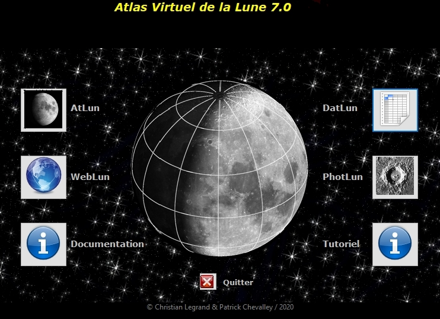
Ecran du Centre de commandes AVL
L'écran du centre de commandes contient 7 boutons
utilisables à ce jour :
AtLun :
permet de charger le programme de cartographie lunaire.
DatLun :
permet de charger le gestionnaire des bases de données des
formations de l’AVL.
WebLun : permet
de charger le gestionnaire de sites Web lunaires.
PhotLun :
permet de charger le gestion des images des bibliothèques
d’images de l’AVL.
Documentation :
permet d’ouvrir la présente documentation.
Tutoriel :
permet d’ouvrir le tutoriel indiquant comment bien utiliser
l’AVL.
Quitter :
permet de quitter l’AVL 7.
L'ÉCRAN PRINCIPAL DU MODULE ATLUN
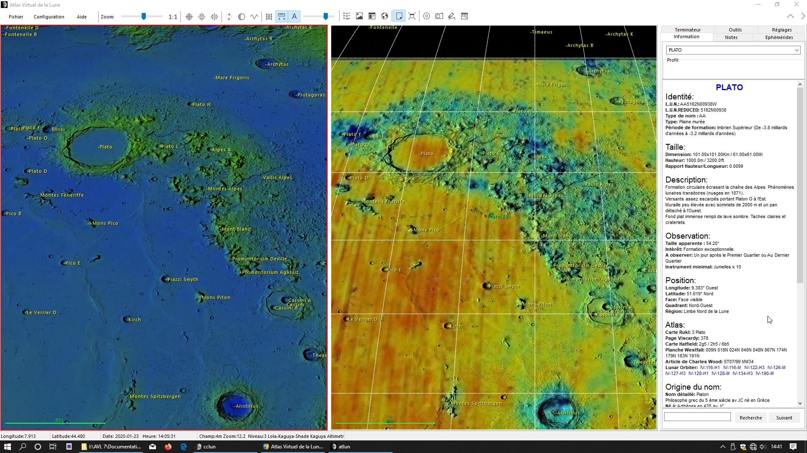
Ecran
ATLUN sur moniteur 16:9 / 22" avec :
A gauche : Nouvelle texture
"LOLA-Kaguya shaded"
A droite : Nouvelle texture "USGS Geological 2020"
Pour cette nouvelle version 7.0, nous avons modernisé l'affichage de la fenêtre principale avec un nouveau jeu d'icônes, de nouveaux boutons, une adaptation aux thèmes sombres Windows et des onglets maintenant escamotables. Il est également possible de scinder l'affichage de la fenêtre sur deux moniteurs indépendants.
L'écran du module "ATLUN" (c) tient dans une fenêtre "Windows". Comme toute les fenêtres Windows, vous pouvez minimiser, ou maximiser ou adapter sa taille en cliquant sur les boutons à droite de la barre des titres.
Il est possible d'ouvrir simultanément deux fenêtres de cartographie, la fenêtre voisinage et les modules DATLUN (c) , PHOTLUN (c) etWEBLUN ©.
Cette fenêtre comporte :
- La barre des menus et
des boutons
- La fenêtre "Carte" pouvant être
coupée en deux sous-fenêtres comme ci-dessus
-
Les onglets "Information", "Ephémérides",
"Notes", "Outils","Réglages"
et "Terminateur" avec leurs fenêtres associées,
maintenant escamotables ou affichables sur un second moniteur
séparé si vous disposez d'une telle configuration.
-
La barre de statuts avec de nombreuse
informations affichées en temps réel.
L'AVL peut utiliser les thèmes sombres Windows afin de limiter l'éblouissement ou pour simple raison esthétique

LA BARRE DES MENUS ET DES BOUTONS
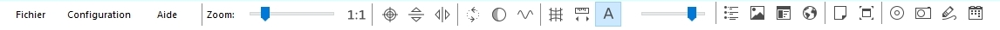
Cette barre comporte des menus donnant accès à des liste de fonctions et des boutons permettant un accès direct et rapide à certaines de ces fonctions.
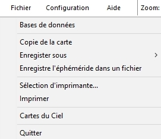
Traditionnel dans tous les logiciels Windows, il sert
dans l' « Atlas Virtuel de la Lune » à
sauvegarder des images, à configurer l'impression, à
lancer le freeware de Patrick Chevalley "Cartes du ciel"
s'il est installé sur votre ordinateur et à quitter
le programme.
FONCTION "Base de
données"
Cette fonction vous permet,
d'ouvrir une fenêtre contenant le module de gestion des
données DATLUN.
Cette fonction vous permet, d'ouvrir une fenêtre contenant une capture de la carte de la fenêtre carte. Vous pouvez ainsi comparer cette capture avec une nouvelle configuration appliquée à la fenêtre carte.
Cette fonction vous permet, d'enregistrer soit au format "jpg", soit au format "bmp", le contenu de la fenêtre "Carte".
FONCTION "Enregistrer l'éphémérides dans un fichier "
Cette fonction vous permet, d'enregistrer dans un fichier "ephem.csv". Elle ouvre une fenêtre de choix des dates limites, du pas d'enregistrement et du répertoire d'enregistrement du fichier. Le bouton "Calcul" créée le fichier à partir des dates et heures spécifiées. Le bouton à droite du champ "Fichier" vous permet de choisir le répertoire d'enregistrement.
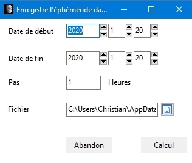
FONCTION "Sélection d'imprimante"
Cette fonction vous permet, via la fenêtre standard de sélection de Windows, de choisir votre imprimante et de la configurer.
Cette fonction vous permet d'imprimer les documents choisis dans le menu des documents à imprimer (Carte, éphémérides et / ou fiche d'information).
Cette option vous permet de lancer "Carte du ciel", le freeware planétarium de Patrick Chevalley afiin de pouvoir déterminer la position de la Lune par rapport aux étoiles et à l'horizon. Elle est destinée à vous permettre des recherches d'occultation d'étoiles, notamment.
Cette fonction permet de quitter l'atlas en fermant tous les fichiers ouverts.
Ce menu permet d'ajuster différents paramètres de l'AVL. Il comporte 8 onglets.
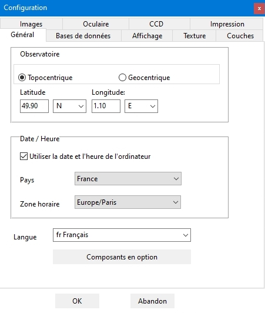
En activant la
coche "Position géocentrique", vous verrez
le globe lunaire tel qu'il vous apparaîtrait si vous étiez
positionné sur la ligne joignant le centre de la Lune au
centre de la Terre.
Mais le logiciel peut tenir compte
des coordonnées du site d'observation pour afficher le
globe lunaire en temps réel et en 3D en tenant compte de la
libration dite "diurne".
Pour cela, il vous
faut désactiver la coche "Position géocentrique"
et afficher la latitude et la longitude de votre lieu
d'observation grâce aux cases incrémentables situées
dans le cadre. Entrez aussi le décalage horaire par rapport
à l'heure de Greenwich, en tenant compte de l'heure d'été
éventuellement dans le champ "Zone horaire".
Le cadre "Date / Heure" vous permet de préciser l'heure et la zone horaire à utiliser.
En cochant la case "Utilise l'heure et la zone horaire de l'ordinateur" pour que l'AVL utilise l'horloge interne de votre ordinateur comme référence.Si vous ne cochez pas la case, vous pouvez spécifier la zone horaire à utiliser avec la case à saisir spécifique qui s'affiche alors.
La liste déroulante "Langue" vous permet de choisir le langage utilisé par le logiciel et la base de données. Dans cette version, outre le Français et l'Anglais, sont maintenant également disponibles par ordre alphabétique :
- Allemand
- Catalan
- Croate
- Espagnol
- Grec
- Hollandais
- Hongrois
- Italien
- Lituanien
- Slovaque
Vous pouvez télécharger ensuite à
partir du site AVL / VMA les traductions des mots et expressions
utilisés dans les menus pour les langues non incluses dans la version de distribution. La page des traductions du site
AVL / VMA vous indiquent également si des traductions de la
base de données sont disponibles dans cette nouvelle langue.
Vous pouvez également vous proposer comme traducteur dans une langue non encore supportée.
Nous tenons à remercier particulièrement les auteurs des traductions déjà existantes pour leur support à notre action.
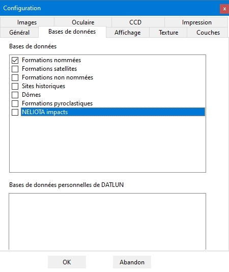
Cases à cocher "Bases de données "
La liste des bases de données affichées est celle que le logiciel a reconnu comme installées.
Les cases à cocher "Bases de données" vous permettent d'indiquer au logiciel quelles sont les bases de données que vous souhaitez afficher sur la carte. Moins il y a de cases de base de données cochées, plus rapide sera l'affichage. Au total lorsque toutes les bases de données sont sélectionnées, le logiciel doit gérer plus de 1 millions de fiches !
Le cadre « Bases de données personnelles de DATLUN » vous permet d'inscrire les chemins d'accès des bases de données personnelles que vous souhaitez lier à ATLUN et DATLUN. Attention, ces bases doivent être au format « csv » et posséder le mêmes champs que les bases développées pour l'AVL par Christian Legrand. La procédure d'importation est décrite dans le manuel de DATLUN et dans le programme DATLUN lui-même.
De nouvelles bases de données sont en constante préparation et sont publiées au fur et à mesure des nouvelles versions.
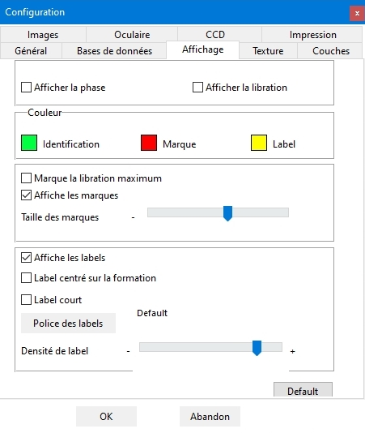
L'activation de la case à cocher "Afficher la
phase" fait apparaître une zone de pénombre
sur le globe lunaire dont la limite suit le terminateur
correspondant à la date et à l'heure réglée
par l'utilisateur (Voir "Onglet
Ephémérides"). Les caractéristiques
de cette pénombre sont réglables (Voir "Onglet
réglages").
L'activation de la case à
cocher "Afficher la libration" fait tourner
légèrement le globe lunaire affiché pour
qu'il présente son aspect tenant compte de la libration
calculée à la date et à l'heure réglée
par l'utilisateur (Voir "Onglet
Ephémérides").
L'affichage de la
libration tient compte de la libration en latitude due à
l'inclinaison de l'orbite de la Lune et de la libration en
longitude due à la vitesse variable de la Lune sur son
orbite elliptique. De plus, si vous avez choisi de rentrer les
coordonnées de votre site d'observation, le globe lunaire
affiché tient également compte de la libration
diurne (Voir "Coordonnées
du site d'observation").
En cliquant sur les petits carrés initialement de couleur verte, jaune et rouge, vous pouvez changer la couleur des marques, du nom de la formation "identifiée" et des "labels" appliqués aux autres formations s'affichant sur la carte.
La case à cocher "Marque la libration maximum" sert à afficher une flèche sur le limbe du disque lunaire à l'endroit où la libration est maximale.
En activant les cases à cocher "Affiche les labels" et/ou "Affiche les marques", vous affichez le point montrant la formation choisie, le nom officiel de celle-ci et les noms des autres formations visibles sur la carte.
Vous pouvez choisir de centrer, ou de décaler àdroite d'un point central droite le nom des formations, en utilisant la case "Label centré sur la formation".
La case "Label court" sert à diminuer l'encombrement de l'affichage qui risque de subvenir si vous utilisez la base de données des cratères indicés. Si vous cochez cette case, les noms des cratères "indicés" seront ramenés à leur indice. Exemple : "ERATOSTHENES A" sera affiché "A". Mais en cliquant dessus, il sera de nouveau identifié comme "ERATOSTHENES A". Par ailleurs les noms des cratères "anonymes" (Bases Unnamed 1 & 2) ne seront pas affichés et ils seront signalés par un simple point. Si vous cliquez sur la lettre ou sur le point, les données concernant ledit cratère seront affichées dans l'onglet "Informations"
Le bouton "Police des labels" vous permet de choisir la police d'affichage des noms, sa taille et son style. Le nom de l apolice active est inscrit à droite du bouton.
Le curseur "Densité des labels" vous permet de régler le nombre de noms affichés simultanément dans la fenêtre de la carte. Il vous sera sans doute nécessaire de procéder à plusieurs ajustements pour trouver le bon compromis.
Ces deux réglages sont également utilisés pour régler l'impression des cartes puisque la carte imprimée est le reflet exact de la carte affichée dans la fenêtre.
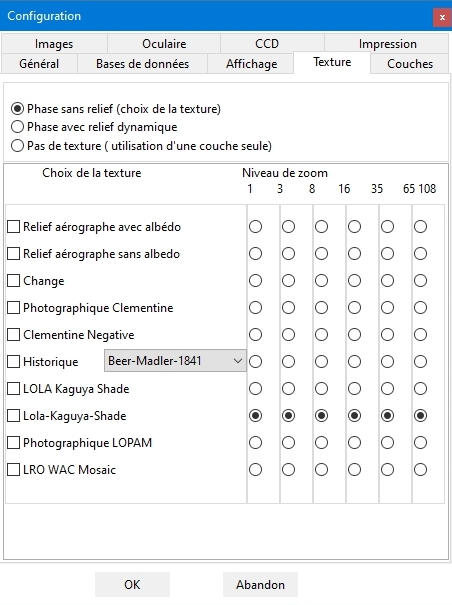
Cet onglet permet de choisir les textures à appliquer en fonction du niveau de zoom atteint.
Les trois cases alternatives à cocher "Phase avec relief", "Phase sans relief" et "Pas de texture" servent à choisir l'activation ou non de l'affichage dynamique des ombres au niveau du terminateur :
Phase sans affichage dynamique des ombres au terminateur
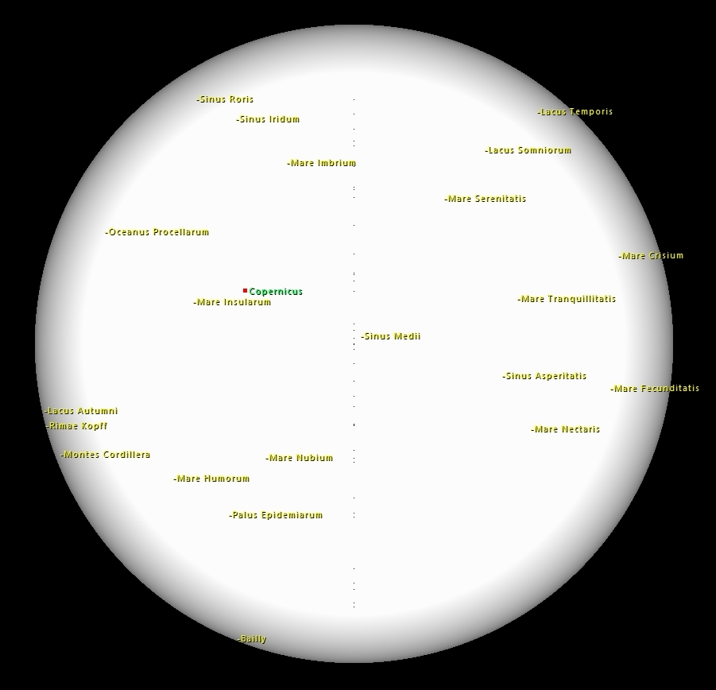
Avec affichage sans texture, globe vierge pouvant recevoir une couche scientifique seule
Avec affichage "normal" dynamique des ombres au terminateur
L’utilisation du nouveau « Digital Elevation Model » issu des données de la sonde LRO a permis d’améliorer le rendu des ombres au terminateur par rapport aux DEM précédents donnant une vue encore plus réaliste, qui peut réellement être comparée à la vue à l'oculaire.
Champ oculaire avec le DEM « LRO »
appliqué au terminateur
Ceci est bien une vue
générée par ordinateur et non pas une image
numérique prise à l'oculaire d'un instrument !
ATTENTION, il n'est pas possible d'utiliser les couches scientifiques avec les ombres dynamiques au terminateur.
Cet onglet présente une matrice de sélection des
textures en fonction du niveau de zoom appliqué. Cette
fonctionnalité rend extrêmement souple l'affichage
des textures.
La liste des textures est établie par le logiciel en
fonction des textures effectivement installées sur votre
ordinateur.
Vous pouvez ainsi choisir de garder une seule des textures
proposées sur la totalité du zoom ou sélectionner
comme ci-dessus un changement progressif de résolution des
textures en fonction du niveau de zoom.
Il suffit de cocher le bouton radio souhaité. Il ne peut
y avoir qu'une seule texture cochée par niveau de zoom.
Pour ne pas voir de texture affichée, cochez la case
« pas de texture / A utiliser avec un overlay seul»
Il est conseillé d'utiliser des textures avec une
résolution augmentant au fur et à mesure que le
niveau de zoom augmente. C'est la solution choisie dans l'exemple
ci-dessus
Il y a 6 niveaux de résolution de textures. Le logiciel
charge les niveaux que vous avez indiqués ci-dessus en
fonction du zoom appliqué à la carte.
Les textures « aérographe » n’ont
que 2 niveaux
La texture USGS Geological 2020 va jusqu'au niveau 3
La texture Clementine a 4 niveaux.
Les texture LRO, LOPAM, LRO-Kaguya et
Chang’é 2 disposent de 6 niveaux..
Les textures "Aérographe
avec albedo", "Aérographe sans albédo"
montrent les détails visibles dans des télescopes
d'amateur jusqu'à 200 mm de diamètre.
Les textures "Clementine
photographique" et « Chang’é 2
photographique » servent à montrer l'aspect des
formations sous l'éclairage solaire le plus haut possible.
La texture "LRO-Kaguya shaded" est
particulièrement adaptée pour l'affichage des
couches scientifiques.
Liste des textures topographiques
disponibles
Les cases à cocher "matricielles" permettent de choisir les textures haute définition. Les captures d'écran ci-dessous vous montrent le cratère Alphonsus au zoom maximum pour comparaison. Six textures sont disponibles :
- "Aérographe avec albedo"
Dessin à l'aérographe avec des nuances d'albédo réalisé à partir des clichés de la sonde Clémentine avec ombre portée uniforme par David Seal du JPL et son équipe. Cette texture atteint une définition de 1 km / pixel.

- "Aérographe sans albedo"
Dessin à l'aérographe sans nuances d'albédo réalisé à partir des clichés de la sonde Clémentine avec ombre portée uniforme par l'équipe du United States Geological Survey / USGS . Cette texture atteint une définition de 500 m / pixel. Elle est maintenant de moindre intérêt vu l'addition de la texture LOLA-Kaguya-Shaded (Cf ci-dessous).

- "Clementine Photographique"
Mosaïque des photographies originales de la sonde Clementine réalisée par le professeur Mark S. Robinson, avec son équipe de la "Northwestern University", copyright USGS / Astrogeology. Cette texture atteint une définition de 200 m / pixel. C'est la "texture avec albédo" la plus précise disponible à ce jour dans les logiciels de cartographie lunaire. C'est aussi la seule montrant les formations sous un éclairage le plus vertical possible, donc sans ombres.

Note
importante : Cette texture a été produite à
partir des données de la sonde Clémentine traitées
par l'USGS. Ce travail remarquable, compte tenu des difficultés
rencontrées a pu induire des distorsions dans les
formations au bord des plaques assemblées. Ainsi, la
position de certaines d'entre elles peut être légèrement
décalées par rapport à leur emplacement réel.
Nous vous suggérons de confirmer cette position avec
la texture aérographe.
- "Clementine Négative"
Mosaïque des photographies originales de la sonde Clementine réalisée par le professeur Mark S. Robinson, avec son équipe de la "Northwestern University", copyright USGS / Astrogeology. La texture obtenue a été ensuite "inversée". Cette texture atteint une définition de 200 m / pixel. C'est la seule texture montrant les formations "en négatif", permettant de visualiser plus facilement certaines formations, notamment les éjectas de cratères ou les cratères récents.
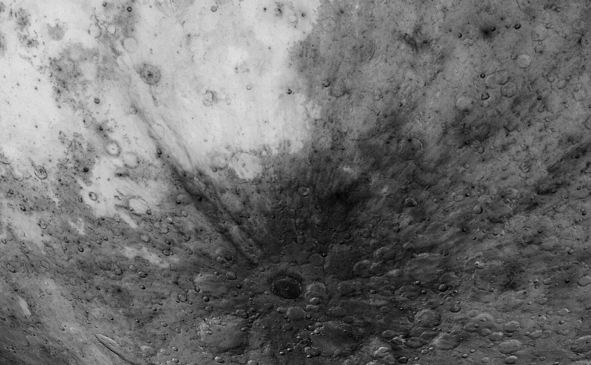
- "Lunar Orbiter Photographique VHR / LOPAM"
Mosaïque des photographies originales des sondes Lunar
Orbiter 1, 2, 3, 4 et 5 à partir des données de
l'USGS, copyright USGS. Dans la présente version "Pro",
cette texture possède une résolution variable
atteignant 60 m /
pixel aux meilleurs endroits. C'est une "texture
avec relief ombré" bénéficiant d’un
éclairage solaire à environ 45°.

Note importante : Cette texture a été construite à partir des images originales des Lunar Orbiter qui ont été partiellement "dérayées", redimensionnées et orientées par l'équipe de l' USGS. Il s'agit là d'un travail remarquable vu la somme de difficultés qui a du être rencontrées. Ce traitement des images plutôt "lourd" peut avoir introduit des déformations et des distorsions à la limite de chaque plaque assemblées. De même, certaines formations peuvent se retrouvées très légèrement déplacées par rapport à leur position réelle. Nous vous suggérons de confirmer l'aspect et la position exacte d'une formation sur laquelle vous souhaitez mener une étude précise en utilisant aussi la texture "aérographe" ou l’une des deux autres textures ci-dessous.
- "Lunar Reconnaisance Orbiter Photographique VHR / LRO"
Mosaïque des images originales de la sondes Lunar Reconnaissance Orbiter à partir des données de l'USGS, copyright USGS. Dans la présente version 7, cette texture possède une résolution variable atteignant 60 m / pixel aux meilleurs endroits. C'est une "texture avec relief ombré" établie avec un éclairage solaire plus vertical que dans le cas de la texture LOPAM ci-dessus.

Note importante : Cette texture a été construite à partir des images originales de LRO. Elle présente l’énorme avantage d’avoir été calibrée avec les coordonnées les plus précises possibles du système de coordonnées lunaires (mieux que l’ULCN 2005) et ces coordonnées ont été utilisées dans la nouvelle nomenclature des formations lunaires de l’Union Astronomique Internationale incluse dans les bases de données de l’AVL 7. De ce fait, dans l’AVL, les formations lunaires UAI sont bien centrées avec leurs labels sur cette texture.
- "LOLA - Kaguya Shaded"
Mosaïque d'images originales des sondes Lunar Reconnaissance Orbiter (USA) et Kaguya (Japon) à partir des données de l'USGS, copyright USGS. Dans la présente version 7, cette texture possède une résolution variable atteignant 60 m / pixel aux meilleurs endroits. C'est une "texture avec relief ombré". Ce n'est pas une photographie, elle a été établie par ordinateur à partir des données altimétriques récoltées par les deux sondes pour créer un DEM (Digital Elevation Model). La texture initiale ne comporte que les zones comprises entre -60° et +60° de latitude. Patrick Chevalley a reconstitué les zones polaires à partir d'autres données LRO.

Cette texture remplace avantageusement désormais la texture "Aerograph ss albedo".

"Aerograph ss albedo"
"LOLA-Kaguya-Shaded"
- "Chang’é 2 photographique VHR" Mosaïque des photographies originales de la sonde Chang’é 2 publiée par les autorités chinoises en février 2012 (Copyright China National Space Agency / CNSA). Dans la présente version 7, cette texture possède une résolution variable atteignant 60 m / pixel aux meilleurs endroits. C'est une "texture sans ombre" comme celle de Clémentine. C’est la texture la plus précise disponible à ce jour dans les logiciels de cartographie lunaire par le biais de l’AVL.

Note importante : Cette texture a été construite par les équipes de la CNSA à partir des images originales de la sonde Chang’é 2. Cette texture n’est pas associée au nouveau système de coordonnées lunaires de l’UAI. La CNSA a apporté un soin tout particulier pour que cette mosaïque soit la plus précise possible. Néanmoins, certaines formations peuvent se retrouvées très légèrement déplacées par rapport à leur position réelle.
- "USGS Unified geological Map of the Moon" Compilation des données apportées par diverses sondes sur l'âge et la composion des terrains lunaires réalisée en 2019. Cette carte dressée par Corey M. Fortezzo (USGS), Paul D. Spudis (LPI), and Shannon L. Harrel (SD Mines) pour le U.S. Geologic Survey / Astrogeology Science Center de Flagstaff différencie les types de terrains par un code couleur. C'est la carte géologique lunaire la plus précise à ce jour. La carte originale peut être téléchargée à l'adresse suivante :
https://astrogeology.usgs.gov/search/map/Moon/Geology/Unified_Geologic_Map_of_the_Moon
Nous l'avons appliqué sur la texture "LOLA / Kaguya Shaded" pour l'associer au relief et construire cette nouvelle texture..


Note importante : Cette texture a été
construite par les équipes de l'USGS et du LPI et est reliée
au nouveau système de coordonnées lunaires de l’UAI.
- "LAC / LPI / O'Brien"
Texture réalisée avec l'assemblage des "Lunar Aeronautical Charts"
éditées par le Lunar and Planetary Institute (LPI) . Cette texture a
été réalisée par David O'Brien du Planetary Science Institute (PSI) qui
l'a mis gracieusement à disposition des auteurs de l'AVL. Le LPI a
également donné son autorisation d'utiliser ces reproductions de leurs
cartes.
Les meilleures cartes dessinées de la Lune jamais
publiées sont les "Lunar Astronautical Charts" et les "Lunar
Maps". Leur échelle est au 1/1 000 000 ème. La plupart comportent le tracé
de courbes de niveau d'altitude permettant de déterminer les hauteurs ou
profondeurs des formations.
Elles étaient destinées à étudier les régions lunaires
en prévision des missions américaines Apollo. Elles ont la particularité de ne
pas utiliser toutes le même jeu de couleurs. Bien entendu, elles n’ont été
établies que pour la Face visible de la Lune puisqu’elles sont basées sur des
observations depuis la Terre
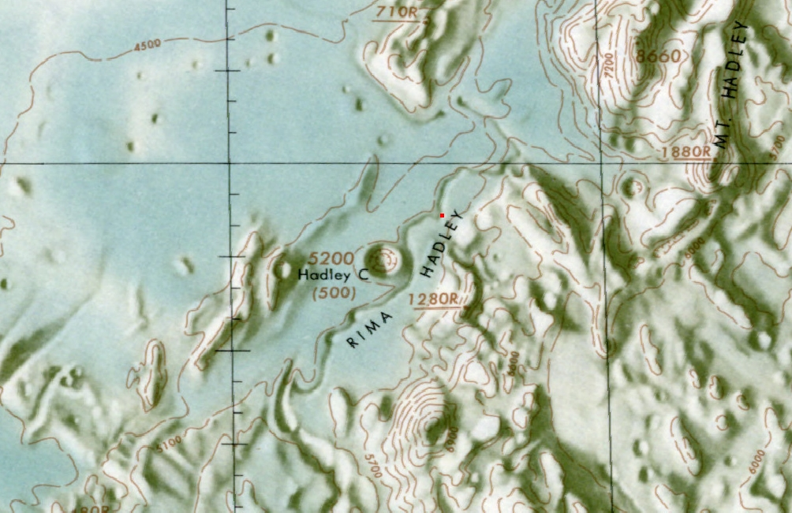
Nous remercions chaleureusement David O'Brien et le LPI de nous permettre l'utilisation de leur travaux dans l'AVL.
Liste des textures historiques disponibles
La case à cocher "Historiques" donne accès à une liste déroulante des textures "historiques" désormais gérées par l'AVL.
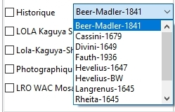
Les captures d'écran ci-dessous vous montrent des
extraits de ces cartes anciennes adaptées à l'AVL.
Note importante : Ces textures réalisées à partir de cartes anciennes établies sans systèmes de coordonnées induisent des écarts entre les positions de formations déssinées et les coordonnées actuelles. De même comme il s'agissait de cartes du disque de la Face Visible, lorsqu'on les applique sur le globe lunaire, la Face Cachée n'est bien évidemmment pas représentée.
"Langrenus 1645"
Texture établie à partir de la carte établie par Michael Florentius Langrenus en 1645 et intitulée : "Plenilunii - Lumina Austriaca Philippica". Notez les noms complètement différents de la nomenclature actuelle sauf quelques uns d'entre eux.

"Rheita 1645"
Texture établie à partir de la carte établie par Anton Schylde de Rheita en 1645 et incluse dans son "Oculus Enoch et Eliae sive Radius Sidereo Mysticus".

"Hevelius 1647" Couleur et Noir & Blanc :
Texture établie à partir de la carte établie
par Johannis Hevelii (ou Ioanne Hevelio) et parue en 1647 dans son
ouvrage "Lunae Descriptio". La carte originale comporte
deux extensions vers les zones de librations Nord-Est et Sud-Ouest
non reprises dans la texture. Il existe des versions en noir et
blanc et en couleurs, ainsi que des versions sans nomenclature.
les versions en noir et blanc peuvent être gravées au
trait ou imprimées en niveau de gris.

"Divini 1649"
Texture établie à partir de la carte établie par Eustachio Divini en 1649. C'est une extrapolation de la carte de Hévélius et non une création propre.

"Riccioli 1651"
Texture établie à partir de la carte établie par Francesco Grimaldi en 1651 qui a incorporé la nomenclature de Giovanni Riccioli, nomenclature qui est encore utilisée de nos jours en grande partie.

"Cassini 1679" : Texture établie à partir de la carte établie par Giovanni Domenico Cassini (Jean-baptiste Cassini I) sur la base d'observation avec des mesures à l'oculaire et présentée à l'Académie des sciences en 1679. Elle était la plus précise de son époque. Elle mesurait 52 cm de diamètre et avait été gravée sur la base de dessins de Sébastien Leclerc et de Jean Patigny.

"Tobias Mayer 1791" :
Texture établie à partir de la carte établie par Tobias Mayeri en 1791 et parue sous le nom de "Tob. Mayeri Tabula Selenographica".

"Beer & Madler 1845"
Texture établie à partir de la carte établie par Wilhelm Beer & Johann Heinrich Mädler en 1841 et parue sous le nom de "Mappa Selenographica".

"Fauth 1936"
Texture établie à partir de la carte établie par Philipp Fauth en 1936 et parue sous le nom de "Unser Mond".

L'AVL comporte la possibilité d'appliquer au dessus de la texture choisie dans l'onglet "Textures", une couche dont on peut régler la transparence pour continuer à voir en dessous la texture employée. Ces couches sont des cartes de transposition de données scientifiques issues des missions spatiales (Clementine, Lunar Prospector, Kaguya, Lunar Reconnaissance Orbiter (LRO), Gravity Recovery and Interior Laboratory (GRAIL), Chandrayann 1, Chang'é), mais aussi des couches de couleurs et enfin, la carte géologique de l'ensemble du globe lunaire. Cette technique permet de montrer pour chaque formation lunaire, sa relation avec les données scientifiques disponibles.
La texture "LRO - Kaguya - Shaded est recommandée pour l'application des couches scientifiques. On peut aussi choisir de ne pas afficher de texture dans l'onglet "Textures" du menu "Configuration".
Nous recherchons continuellement de nouvelles données mises en ligne et pouvant être incorporées à l'AVL.
L'activation de la case "Voir la couche" permet d'afficher au dessus de la texture sélectionnée la couche choisie grâce à la liste déroulante ci-dessous.

En cliquant sur la case fléchée de la liste déroulante, celle-ci se déroule et vous permet de choisir la couche dont vous avez besoin. Elles sont repérées par leur nom en anglais. Nous avons traduit celui-ci ci-dessous pour vous faciliter le choix.Voici la présentation des listes actuellement associées à l'AVL. Nous ajouterons les nouvelles couches en téléchargement sur notre site dès qu'elles seront disponibles. Vous trouverez :
- des couches de textures
- des couches de colorisation
-
une couche géologique
- des couches topographiques
-
des couches de mesures gravimétriques
- des
couches de répartition d'éléments
- des
couches de relevés d'émissions neutroniques
Présentation des couches « Couleurs et albedos »
Couche "Albedo"
Cette couche permet d'ajouter l'albedo de la surface lunaire à la texture « Aérographe sans albedo »qui ne le prend pas en compte, permettant ainsi de rendre encore plus "réelle" la vue sur l'écran. Il n' y a pas de légende spécifique puisqu'il s'agit d'un simple traitement d'image.
Couche "Real colors" (Couleurs réelles)

Cette couche essaie de représenter la couleur la plus réelle possible du globe lunaire. Elle est reconstituée à partir des couleurs des clichés de Clementine équilibrés dans les 3 canaux RGB. Il n' y a pas de légende spécifique puisqu'il s'agit d'un simple traitement d'image.
Couche "Enhanced colors" (Couleurs augmentées)

Cette couche a été obtenue en augmentant au maximum le contraste en les trois couleurs spectrales. Il n' y a pas de légende spécifique puisqu'il s'agit d'un simple traitement d'image. Elle fait apparaître de subtiles répartitions dans les zones rocheuses et notamment les différents écoulements de lave dans les mers.
Couche "Color ratio / Clementine" (Rapport des couleurs)

Cette couche a été obtenue en
récupérant les cartes du site "PDS Map A
Planet" établie à partir des images de la sonde
"Clementine". Les variations de couleurs trahissent les
variations de composition de la surface lunaire.
Les vues de
la Lune "UVVIS Ratio" ("fausses couleurs") de
Clementine ont été créées en utilisant
3 des 5 bandes passantes des caméras UVVIS de la sonde
Clementine et en les combinant en couleurs primaires rouge, verte
et bleue d'une image en couleurs:
Couleur |
Bande passante |
Red |
750 nm/415 nm |
Green |
750 nm/950 nm |
Blue |
414 nm/750 nm |
L'image en couleurs produite met en valeur des différences de couleurs en relation avec la minéralogie du sol. Les hautes terres lunaires, la plupart du temps d'anciens rocs d'anorthosite gabbroïqule (~4,5 milliards d'années), sont montrés avec du rouge (les plus vieux) et du bleu (les plus jeunes). les mers lunaires (de ~ 3,9 à ~1 milliards d'années), la plupart du temps des matériaux basaltiques riches en fer avec des teneurs en titane variables, sont montrés en jaune / orange (riche en fer et pauvres en titane) et en bleu (riche en fer et entitane). En surimpression sur ces unités géologiques de base, on trouve les matériaux des bassins et des cratères d'âges variés, se déclinant en rouge sombre et en bleu pour les anciesn bassins et jusqu'aux rayonnements de cratères en bleu (e.g., Mcewen et al., 1999; Pieters et al., 1999).
Présentation
des couches « Caractéristiques physiques »
Couche "Daytime surface temperature / Chang’é 2 » (Température diurne de surface)


Cette
couche est réalisée à partir de données
de la sonde Chang’é 2.
Elle permet de visualiser la température au niveau de la
surface lunaire, en étant tourné vers le
Soleil pendant le jour lunaire, celui-ci étant au plus haut
point possible dans le ciel lunaire au cours de la lunaison. Le
légende est en degrés kelvin.
Couche "Nightime surface temperature / Chang’é 2 » (Température nocturne de surface)

Cette couche est
réalisée à partir de données de la
sonde Chang’é 2. Elle permet de visualiser la
température au niveau de la surface lunaire dans la partie
obscure du globe lunaire. La légende est en degrés
Kelvin.
Couche "Altitude / Clementine "


La légende des couleurs est en pieds (1 pied / feet = 0,33 m). Il faut donc diviser le nombre indiqué par 3 pour avoir l'altitude en mètres. La colonne de gauche est basée sur la répartition uniforme de la couleur, alors que celle de droite est basée sur la répartition uniforme des altitudes.
Cette couche est réalisée à partir des données altimétrique enregistrée par la sonde Clementine et compilées par Maria Zuber et son équipe du LPI. Elle permet de situer les altitudes relatives des différentes formations. Elle a mis notamment ainsi en évidence l'existence du grand bassin d'impact "South Pole / Aitken" au Sud de la Face Cachée.
Couche
"Altitude / ULCN 2005"

Cette couche est réalisée à partir d'une compilation de données altimétrique enregistrée par les missions Apollo, les sondes Clementine et Lunar Prospector et des mesures réalisées depuis la Terre, notamment avec des radiotélescopes en mode radar et mises en ligne sur le site de l'USGS par Brent Archinal et son équipe . Elle permet de situer les altitudes relatives des différentes formations.
Il est recommandé d'utiliser cette couche avec la texture « Aérographe sans albédo ». Il n'y a pas de légende des couleurs disponible pour cette couche.
Couche "Altitude 2 / Kaguya"


Cette couche est réalisée à partir des données altimétrique enregistrée par la sonde japonaise Kaguya et mises en ligne par l'équipe de la JAXA. Elle permet de situer les altitudes relatives des différentes formations. C'est la planisphère altimétrique lunaire la plus détaillée du moment.La légende des couleurs est en m d'altitude.
Présentation des couches « Géologie et gravité »
Couche "Geological / USGS" (nature géologique des sols)

Cette couche est réalisée à partir des données disponibles en 2013 sur le site de l'USGS "Astrogeology / Webgis" et rassemble les différentes cartes géologiques de la Lune réalisées. Les couleurs sont fonction des périodes de formation des formations. Les formations en jaune vif sont de « l'Ere Copernicienne » et sont les plus récentes.
Puisque chacune des cartes primaires a sa propre légende,
la légende globale difficile à concevoir n'est pas
disponible pour le moment. Il est recommandé d'utiliser
cette couche avec la texture « Aérographe sans albédo
» ou la texture "LOLA-Kaguya-Shaded".
Couche "USGS Geological 2020" (nature géologique des sols)

Cette couche est réalisée à partir des données disponibles sur le site de l'USGS / Astrogeology en 2020. Elle est identique à la texture du même nom.
La légende globale est la même que pour la carte. Il est recommandé d'utiliser cette couche sans texture.Couche "Rocks types / Clementine" (Types de roches)

Cette couche est réalisée à partir des données orbitales enregistrées par la sonde Clementine et compilées par le Dr Maria T. Zuber et son équipe de l'USGS. Elle permet de visualiser la différence de composition des roches constituant la surface. Il n'y a pas de légende disponible pour cette couche.
Couche "Water / Eau / Chandrayann"
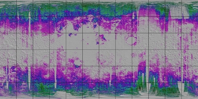
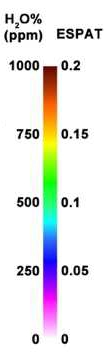
Cette couche est réalisée à partir des données orbitales enregistrées par la sonde indienne Chandrayann 1 et compilées par l'ISRO et Shuai Li and Ralph E. Milliken en 2017. Elle permet de visualiser la présence d'eau dans les roches de surface.
Couche "Silicates / LRO"

Cette couche est
réalisée à partir des données
orbitales enregistrées par la sonde LRO
et compilées par le Dr Mark Robinson et son équipe.
Elle permet de visualiser le pourcentage de silicates dans les
roches de la surface lunaire.
Couche "Surface roughness / LRO" (Rugosité de la surface)

Cette couche est réalisée à partir des données orbitales enregistrées par la sonde LRO et compilées par le Dr Mark Robinson et son équipe. Elle permet de visualiser la rugosité de la surface lunaire.
Couche "Slope & surface roughness / LRO" (Pente & rugosité de la surface)

Cette couche est réalisée à partir des données orbitales enregistrées par la sonde LRO et compilées par le Dr Mark Robinson et son équipe. Elle permet de visualiser la rugosité associée à la pente de la surface lunaire. Il est préférable de l'utiliser sur une sphère sans texture (Menu "Configuration / Textures") car elle comporte un dessin de relief incorporé.
Couche "Soil atomic mass / Lunar Prospector" (Masse atomique du sol)


Cette couche est réalisée à partir des données de la sonde Lunar Prospector compilées par le Dr Alan Binder et son équipe. Elle permet de visualiser la masse atomique du sol au droit des formations. On se rend compte immédiatement que les mers de la Face Visible ont les plus grandes masses atomiques révélant la présence prépondérante d'éléments lourds. La légende disponible pour cette couche est en grammes / môle
.
Couche "Crust thickness / Clementine" (Epaisseur de la croûte lunaire)


Cette couche est réalisée à partir des données orbitales enregistrées par la sonde Clementine et compilées par le Dr Maria T. Zuber et son équipe de l'USGS. Elle permet de visualiser l'épaisseur de la croûte lunaire au droit des formations. On se rend ainsi compte que celle-ci est minimale sous les mers et maximale sur la Face Cachée.
Couche "Bouguer Gravity / Clementine" (Gravité corrigée de Bouguer)


Cette couche est réalisée à partir des données gravimétriques enregistrées par la sonde Clementine et compilées par le Dr Maria T. Zuber et son équipe de l'USGS, ainsi que les données de la sonde Lunar Prospector compilées par le Dr Alan Binder et son équipe. Elle permet de visualiser les anomalies gravimétriques au droit des formations. Elle est exprimée en milligals. On se rend ainsi compte que les anomalies fortes correspondent aux mers et trahissent la présence des célèbres "mascons". Ces données sont corrigées selon la méthode de Bouguer qui tient compte de la densité du sol au droit de la mesure.
Couche "Free Air Gravity / Clementine" (Gravimétrie "Free Air")


Cette couche est réalisée à partir des données gravimétriques enregistrées par la sonde Clementine et compilées par le Dr Maria T. Zuber et son équipe de l'USGS, ainsi que les données de la sonde Lunar Prospector compilées par le Dr Alan Binder et son équipe. Elle est exprimée en milligals. Elle permet de visualiser les anomalies gravimétriques au droit des formations. On se rend ainsi compte des anomalies fortes correspondent aux mers et trahissent la présence des célèbres "mascons". Ces données sont corrigées selon la méthode "Free air" qui tient compte de l'altitude des formations au droit de la mesure.
Couche "Geoid anomalies / Clementine" (Anomalies du géoïde )


Cette couche est réalisée à partir des
données gravimétriques enregistrées par la
sonde Clementine et compilées par le Dr Maria T. Zuber et
son équipe de l'USGS, ainsi que les données de la
sonde Lunar Prospector compilées par le Dr Alan Binder et
son équipe. Elle permet de visualiser les anomalies de la
forme du globe de la Lune qui n'est pas absolument sphérique.
On visualise ainsi notamment le fait que la Face Cachée est
moins "bombée"que la face visible tout en étant
plus élevée.
Couche "Free Air Gravity / GRAIL degree 2 to 700" (Gravimétrie "Free Air avec degrés harmoniques de 2 à 700")

Cette couche est réalisée à partir des données gravimétriques enregistrées par les deux sondes GRAIL Ebb & Flow et compilées par le Dr Maria T. Zuber et son équipe de l'USGS. Elle est exprimée en milligals. Elle permet de visualiser les anomalies gravimétriques au droit des formations. On se rend ainsi compte des anomalies fortes correspondent aux mers et trahissent la présence des célèbres "mascons". Ces données sont corrigées selon la méthode "Free air" qui tient compte de l'altitude des formations au droit de la mesure. Nous n'avons pas trouvé de légende pour cette couche.
Couche "Free Air Gravity / GRAIL degree 7 to 700" (Gravimétrie "Free Air avec degrés harmoniques entre 7 à 700")

Cette couche est réalisée à partir des données gravimétriques enregistrées par les deux sondes GRAIL Ebb & Flow et compilées par le Dr Maria T. Zuber et son équipe de l'USGS. Elle est exprimée en milligals. Elle permet de visualiser les anomalies gravimétriques au droit des formations. On se rend ainsi compte des anomalies fortes correspondent aux mers et trahissent la présence des célèbres "mascons". Ces données sont corrigées selon la méthode "Free air" qui tient compte de l'altitude des formations au droit de la mesure. Nous n'avons pas trouvé de légende pour cette couche.
Couche "Bouguer Gravity / GRAIL" (Gravimétrie "Bouguer")

Cette
couche est réalisée à partir des données
gravimétriques enregistrées par les deux sondes
GRAIL Ebb & Flow et compilées par le Dr Maria T. Zuber
et son équipe de l'USGS. Elle permet de visualiser les
anomalies gravimétriques au droit des formations. Elle est
exprimée en milligals. On se rend ainsi compte que les
anomalies fortes correspondent aux mers et trahissent la présence
des célèbres "mascons". Ces données
sont corrigées selon la méthode de Bouguer qui tient
compte de la densité du sol au droit de la mesure. Nous
n'avons pas trouvé de légende pour cette couche.
Couche
"Crustal
thickness / GRAIL" (Epaisseur
de la croûte)


Cette couche est réalisée à partir des données gravimétriques enregistrées par les deux sondes GRAIL Ebb & Flow et compilées par le Dr Maria T. Zuber et son équipe de l'USGS. Elle est exprimée en km. Elle permet de visualiser les variations de l'épaisseur de la croûte au droit des formations. On se rend ainsi compte des sous-épaisseurs fortes correspondant aux mers qui trahissent la présence des célèbres "mascons".
Présentation des couches « Répartition des éléments »
Couche "Hydrogen / Lunar prospector"

Cette couche est réalisée à partir des données de la sonde Lunar Prospector compilées par le Dr Alan Binder et son équipe. La légende n'est pas disponible pour le moment. Elle permet de visualiser la répartition de l'hydrogène au droit des formations.
Couche "Iron
/ Lunar Prospector" (Fer)


Cette couche est réalisée à partir des données de la sonde Lunar Prospector compilées par le Dr Alan Binder et son équipe. Elle permet de visualiser la répartition du fer au droit des formations. On se rend compte immédiatement que les mers de la Face Visible sont riches de ce métal.
Couche
"FeO / Clementine"
(Oxydes de fer)

Cette couche est établie à partir des données de la sonde Clémentine. Les valeurs en FeO (Oxydes de fer) peuvent être utiles pour identifier les cratères avec excavation de basaltes et les "cryptomares" (Mers de basalte recouverte par des matériaux plus récents).
Couche
"Titane / Lunar
prospector"

Cette couche est réalisée à
partir des données de la sonde Lunar Prospector compilées
par le Dr Alan Binder et son équipe. Elle permet de
visualiser la répartition du titane au droit des
formations. On se rend compte immédiatement que les mers de
la Face Visible sont riches de ce métal. Il n'y a pas de
légende disponible pour cette couche.
Couche
"Potassium / Lunar
prospector"


Cette couche est réalisée à partir des données de la sonde Lunar Prospector compilées par le Dr Alan Binder et son équipe. Elle est exprimée en unités de détection. Elle permet de visualiser la répartition du potassium au droit des formations. On se rend compte immédiatement que les mers de la Face Visible sont riches de ce métalloïde
Couche
"Gadolinium / Lunar
Prospector"

Cette couche est réalisée à partir des données de la sonde Lunar Prospector compilées par le Dr Alan Binder et son équipe. Elle exprime la concentration en gadolinium dans le sol. On se rend compte immédiatement que les mers de la Face Visible sont riches de ce métalloïde.
Présentation des couches « Répartition des éléments radioactifs »
Couche "Thorium / Lunar Prospector"

Cette
couche est réalisée à partir des données de la sonde Lunar Prospector
compilées par le Dr Alan Binder et son équipe. La légende n'est pas
disponible pour le moment. Elle permet de visualiser la répartition du
Thorium au droit des formations. On se rend compte immédiatement que
les mers de la Face Visible sont riches de cet élément radioactif. La
répartition du thorium est un des arguments en faveur d'un bassin
d'impact géant qui serait survenu avant la période Pré-Nectarienne.
Couche "Uranium / Kaguya"


Cette couche est réalisée à
partir des données de la sonde Kaguya compilées par
l'équipe de la JAXA. La légende est basé sur
un comptage de particules émises par l'uranium. Elle permet
de visualiser très grossièrement la répartition
de l'uranium au droit des formations. On se rend compte
immédiatement que les mers de la Face Visible sont riches
de cet élément radioactif.
Couche
"Radon /
Lunar Prospector"


Cette
couche est réalisée à partir des données
de la sonde Lunar Prospector compilées par le Dr Alan
Binder et son équipe. La légende est basé sur
un comptage de particules émises par le radon. Elle permet
de visualiser la répartition du radon au droit des
formations.
Couche "Polonium / Lunar Prospector"


Cette couche est réalisée à partir des données de la sonde Lunar Prospector compilées par le Dr Alan Binder et son équipe. La légende est basé sur un comptage de particules émises par le polonium. Elle permet de visualiser la répartition du polonium au droit des formations.
Présentation des couches « Emissions de neutrons »
Couche "Neutrons epithermal / Lunar prospector" (Neutrons épithermiques)


Cette
couche est réalisée à partir des données
de la sonde Lunar Prospector compilées par le Dr Alan
Binder et son équipe. Elle est exprimée en nombre de
neutrons détectés. Elle permet de visualiser la
répartition de l'émission des neutons
"épithermiques" au droit des formations. On se
rend compte immédiatement que les mers de la Face Visible
sont de puissantes émettrices
.
Couche "Neutrons broadband / Lunar prospector" (Neutrons à large bande)

Cette couche est réalisée à partir des données de la sonde Lunar Prospector compilées par le Dr Alan Binder et son équipe. Elle permet de visualiser la répartition de l'émission des neutrons "à large bande d'émission" au droit des formations. On se rend compte immédiatement que les mers de la Face Visible sont de puissantes émettrices
Couche
"Neutrons fast / Lunar Prospector" (Neutrons rapides)


Cette couche est réalisée à partir des données de la sonde Lunar Prospector compilées par le Dr Alan Binder et son équipe. Elle est exprimée en nombre de neutrons détectés. Elle permet de visualiser la répartition de l'émission des neutons "rapides" au droit des formations. On se rend compte immédiatement que les mers de la Face Visible sont de puissantes émettrices.
Présentation
des couches « Emissions de radiations »
Couche "Gamma rays / Kaguya" (Rayonnement Gamma)


Cette couche est réalisée à partir
des données de la sonde Kaguya compilées par
l'équipe de la JAXA. La légende est basé sur
un niveau de rayonnement gamma détecté par la sonde.
On se rend compte immédiatement que la répartition
de ces rayonnements est plus uniforme.
Curseur "Transparence"

Ce curseur permet de choisir le degré de transparence de la couche appliquée sur la texture. Il n'intervient pas sur cette texture. Lorsque le curseur est à droite, la couche est très transparente donc presque invisible. Lorsqu'il est à gauche, la couche masque quasi complètement la texture sous-jacente. Choisissez le degré qui vous permet de continuer à distinguer les détails des deux en même temps. Exemple (sans texture sous-jacente) :
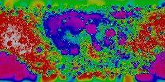
Couche non transparente
 Couche transparente
Couche transparente
Cadre "Grille"
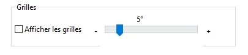
La case à cocher « Afficher grille » permet
d'afficher une grille de méridiens et de parallèles
sur la surface du globe lunaire affiché.
Le curseur permet de changer le « pas » d'affichage
de cette grille. Il varie de 5 en 5° jusqu'à de 30 en
30 °.

Grille avec pas de 1 en 1 °

Grille avec pas de 5 en 5°

Grille avec pas de 30 en 30°
ONGLET "Image"
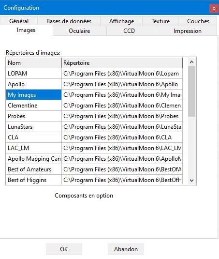
Cet onglet permet de classer les images disponibles dans la bibliothèque compte tenu de leur nombre croissant et de régler leur affichage.
Liste des répertoires d'images
Dans la liste "Répertoires d'images", vous pouvez saisir les chemin des bibliothèques d'images que vous souhaitez utiliser. Par défaut, AVL vous créée les sous-répertoires "LOPAM", "Apollo", "Clementine", "Probes" ("Sondes"), "CLA" et "My images" (Mes images) dans lesquels vous pourrez respectivement ranger les images de formations que vous pouvez télécharger depuis le site Web AVL (Images des meilleurs astrophotographes lunaires) ou que vous acquérirez légalement. Le sous-répertoire "My images" (Mes images) est réservé au rangement de vos propres images prises avec une webcam, un caméra CCD ou scannées.
ONGLET
"Oculaires"
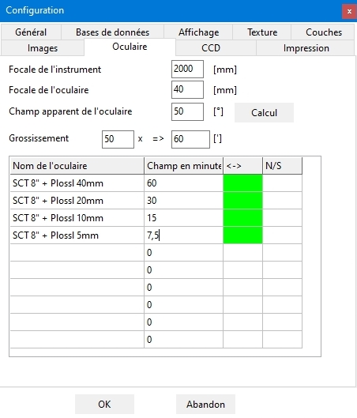
Cet onglet vous permet de rentrer les paramètres de vos oculaires afin de pouvoir visualiser l'aspect réel de la Lune observée dans votre instrument grâce à la fonction "Oculaire" du menu contextuel "Clic droit" de la souris.
Liste d'oculaires
Vous pouvez rentrer directement les caractéristiques de vos oculaires dans les champs de la liste, si vous les connaissez : la description dans la colonne de gauche "Nom de l'oculaire" et le champ apparent en minutes d'arc dans la colonne de droite "Champ en minutes" . Un exemple vous est montré par défaut. Il peut être effacé. Vous pouvez rentrer 10 oculaires au maximum. Nous vous conseillons de les rentrer par ordre croissant de grossissement obtenu.
Calcul des paramètres d'oculaires
Si vous ne connaissez pas les paramètres de vos oculaires, dans le haut de l'onglet une petite calculette va vous y aider. Rentrer d'abord dans le champ du même nom, la "Focale de l'instrument" pour lequel vous souhaitez faire les calculs. Puis rentrez la "Focale de l'oculaire" considéré dans le champ prévu. Enfin, rentrer la largeur du "Champ apparent de l'oculaire" dans le troisième champ prévu. Ce champ est le champ en degrés fournis dans les documentations et publicités sur les types d'oculaires. Ainsi un oculaire de type Plössl a un champ apparent d'environ 50°, un oculaire ultra grand angle comme les UWA Meade ou les Nagler Televue, un champ de 82°.
Appuyez sur le bouton "Calcul". Dans le cadre "Champ réel de l'oculaire" apparaît le diamètre de la région observée sur la Lune en minutes d'arc avec cet oculaire et l'instrument mentionné précédemment. Dans le champ "Grossissementde l'oculaire", est affiché le grossissement donné par l'oculaire avec l'instrument mentionné. Une fois le calcul effectué, il vous reste à reporter ces valeurs et la description de l'oculaire dans les deux colonnes du tableau inférieur.
Vous pouvez également incorporer directement les effets d'orientation dus à la nature de l'instrument utilisé en cliquant dans les cases des colonnes "<->" (Inversion droite - gauche) et "N/S" (Inversion Nord / Sud). L'exemple ci-dessus vous montre la configuration pour un Schmidt - Cassegrain et un télescope de type "Newton".
ONGLET "CCD"
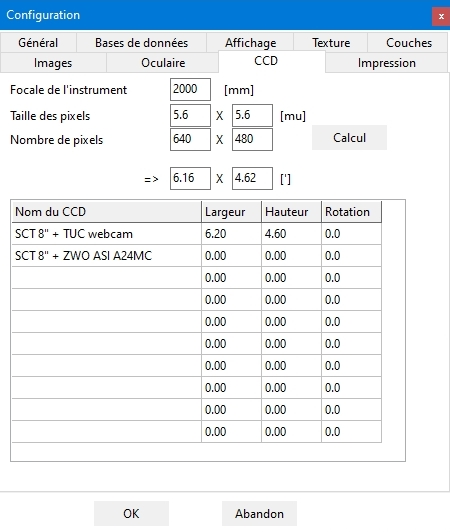
Cet onglet vous permet de rentrer
les paramètres de vos caméras CCD et autres
dispositifs imageurs afin de pouvoir visualiser le champ des
images possibles projetée sur la carte lunaire en fonction
de votre instrument
Liste de
caméras
Vous pouvez rentrer directement les caractéristiques de vos caméras dans les champs de la liste, si vous les connaissez : la description dans la colonne de gauche "Nom du dispositif" et les dimensions du champ en pixels. Un exemple vous est montré par défaut. Il peut être effacé. Vous pouvez rentrer 10 dispositifs au maximum. Nous vous conseillons de les rentrer par ordre croissant de grossissement obtenu..
Calcul des paramètres de caméras
Si vous ne connaissez pas les paramètres de vos caméras, dans le haut de l'onglet une petite calculette va vous y aider. Rentrer d'abord dans le champ du même nom, la "Focale de l'instrument" pour lequel vous souhaitez faire les calculs. Puis rentrez les dimensions du capteur et des pixels de ladite caméra.
Appuyez sur le bouton "Calcul". Dans le cadre
"Champ réel du dispositif" apparaît
les dimensions de la région imagée sur la Lune en
minutes d'arc avec cette caméra et l'instrument mentionné
précédemment.
ONGLET "Impression"
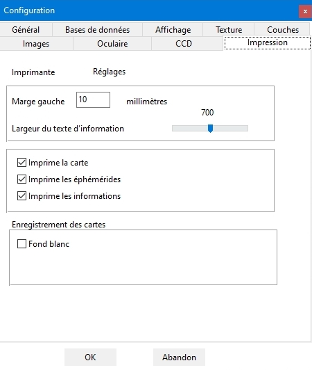
Cet onglet permet de régler les paramètres d'impression des cartes.
Bouton "Réglages"
Ce bouton donne accès au réglage "Windows" des paramètres de l'imprimante.
Format d'impression
Ces zones vous permettent de choisir la largeur de la marge lors de l'impression et la grandeur des polices d'impression.
Cases à cocher des documents à imprimer
Ces cases à cocher vous permettent de choisir les documents à imprimer.
La case "Imprime la carte" permet d'imprimer la carte qui figure dans la fenêtre carte. Elle est en noir et blanc pour les cartes topographiques et en couleurs pour les cartes géologiques, avec des noms en couleur dans les deux cas. Il est possible que vous ayez à agrandir la police de la carte afin de rendre les noms plus visibles à l'impression
Le texte "Imprime les éphémérides" contient les informations orbitales, de phase et de librations correspondant aux dernières dates et heures sélectionnées dans l'onglet "Ephémérides".
Le texte "Imprime les informations" contient la fiche d'information de la dernière formation sélectionnée sur la carte.
Enregistrement des cartes
Les cartes affichées peuvent être enregistrées sur papier avec un fond blanc autour du disque lunaire en cochant cette case afin de diminuer les consommations d'encre ou de toner.
LE
MENU "AIDE"
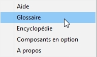
Ce menu vous donne accès aux outils vous permettant de mieux utiliser l'atlas.
Rubrique "Aide"
Ce choix vous permet d'afficher dans une fenêtre indépendante le présent manuel.
Rubrique "Glossaire"
Ce choix vous permet d'afficher un glossaire de plus d'une centaine de termes liés à la Lune et à son observation.

Le glossaire se présente dans une fenêtre
indépendante divisée en 3 parties.
La partie
supérieure comprend les lettres de l'alphabet. En cliquant
sur l'une d'entre elles, vous avez accès aux mots
commençant par cette lettre.
La partie inférieure
gauche est une arborescence des lettres et de termes.
La
partie droite contient la définition du terme sélectionné
dans la partie gauche. Des liens vous renvoient aux autres
définitions du glossaire utilisées dans la
définition choisie.
Rubrique "Encyclopédie"
Ce choix vous donne accès à une page présentant les principales dimensions de la Lune et de son orbite.
Rubrique "A propos" (Toutes versions)
Cette rubrique vous indique la répartition des tâches entre Christian Legrand et Patrick Chevalley pour la réalisation de l’AVL 7.
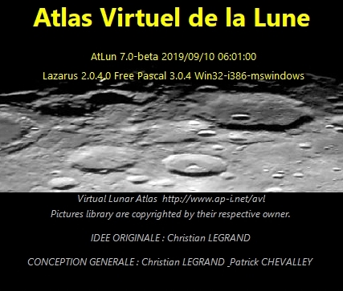
LE CURSEUR DE ZOOM
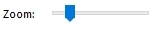
En ajustant ce curseur, vous pouvez régler la puissance du zoom appliqué à la fenêtre "Carte" sélectionnée (Voir "fenêtre carte")..
Situé complétement à gauche, le globe lunaire est entièrement visible. En déplaçant le curseur vers la droite, on augmente le facteur de zoom
En fonction de la résolution des textures choisie dans les réglages (Voir "onglet "Réglages"), le zoom ne fera plus apparaître de nouveaux détails et l'affichage pourra devenir un peu plus flou.
L'affichage des noms de formations est plus ou moins important en fonction de la densité et de la taille des labels (Voir "labels et marques".). Il peut être augmenté ou diminué avec le curseur des labels plus à droite sur la barre de boutons.
LE
BOUTON "1:1"
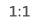
En cliquant sur ce bouton, vous revenez instantanément au zoom minimal, vous permettant de faire tenir entièrement le globe lunaire dans la fenêtre "Carte" sélectionnée, qu'elle que soit la taille de celle-ci.
LE BOUTON "Centre"
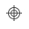
En cliquant sur ce bouton, vous positionnez instantanément le centre du globe lunaire visible au centre de votre écran lorsque le zoom est au minimum. Ce bouton sert aussi à centrer la formation sélectionnée dans la fenêtre "Carte" sélectionnée.
LE BOUTON "Nord / Sud "
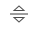
En cliquant sur ce bouton, vous inversez immédiatement le sens Nord-Sud de la fénêtre "Carte" sélectionnée. Il doit être utilisé en combinaison avec le bouton "Est - Ouest" ci dessous pour passer de la vue à l'oeil nu à la vue dans un télescope Newton.
LE BOUTON "Est / Ouest "
En cliquant sur ce bouton, vous inversez immédiatement le sens Est-Ouest de la fénêtre "Carte". Pratique pour passer de la vue à l'oeil nu à la vue dans un télescope catadioptrique ou dans une lunette équipés d'un renvoi coudé.
LE BOUTON "Rotation / Globe entier"
En cliquant sur ce bouton, vous avez accès à une
puissante fonction de cette version. Lorsqu'il n'est pas enfoncé,
la fenêtre carte vous montre la face visible depuis la Terre
avec la phase et la libration appliquées si vous avez coché
les cases nécessaires dans l'onglet "Affichage"
du menu "Configuration". Mais si vous enfoncez le
bouton, il bascule en mode "Globe" et la fenêtre
carte affiche alors un globe complet en trois dimensions que vous
aller pouvoir observer sous toutes ses faces.
LE BOUTON "Phase"
En enfonçant sur ce bouton, vous affichez ou enlevez la visualisation de la phase sur le globe lunaire.
LE BOUTON "Libration"
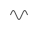
En enfonçant sur ce bouton, vous affichez ou enlevez la visualisation de la libration sur le globe lunaire.
LE BOUTON "Grille"
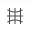
Le bouton « Grille » permet d'afficher ou d'enlever la grille de méridiens et de parallèles sur la surface du globe lunaire affiché.
LE BOUTON "Echelle"
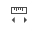
En enfonçant sur ce bouton, vous affichez ou enlevez une échelle de dimensions en bas à gauche de la fenêtre "Carte".

Attention, cette échelle indique les dimensions angulaires. Elle n'indique pas les dimensions à la surface du globe. Pour mesurer des distance sur le globe, il faut utiliser la mesure de distance qui est prévue dans l'onglet "Outils".
LE
BOUTON "Labels / Etiquettes"
Ce bouton vous permet d'afficher ou de retirer les labels / étiquettes. Son utilisation est pratique pour adapter rapidement la couleur des labels au contexte des teintes de la carte, notamment lors de l'utilisation des couches scientifiques.
LE BOUTON "Label court"
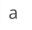
Le bouton "Label court" sert à diminuer l'encombrement de l'affichage qui risque de subvenir si vous utilisez les bases de données des cratères indicés et/ ou des cratères anonymes. Si vous cochez cette case, les noms des cratères "indicés" seront ramenés à leur indice. Exemple : "ERATOSTHENES A" sera affiché "A". Mais en cliquant dessus, il sera de nouveau identifié comme "ERATOSTHENES A". Par ailleurs les noms des cratères "anonymes" (Bases Unnamed 1 & 2) ne seront pas affichés et ils seront signalés par un simple point. Si vous cliquez sur sur le point, les données concernant ledit cratère seront affichées dans l'onglet "Informations"
LE CURSEUR DE LABELS / ETIQUETTES
En
ajustant ce curseur, vous pouvez régler le nombre de labels
/ étiquettes affichés en même temps sur la
fenêtre "Carte" sélectionnée.
Situé complétement à
gauche, le globe lunaire est entièrement dépourvu de
labels. En déplaçant le curseur vers la droite, on
augmente le nombre de labels visibles. Ce nombre varie également
en fonction du niveau de zoom.
En fonction du nombre de bases de
données utilisées, l'affichage peut être
fortement encombré, même au zoom maximum.
LE BOUTON "Voisinage"
En cliquant sur ce bouton, une nouvelle fenêtre apparaît qui contient le nom des formations situées dans le voisinage de la formation actuellement affichée. Vous pouvez cliquer sur l'une d'entre elles pour vous y rendre.
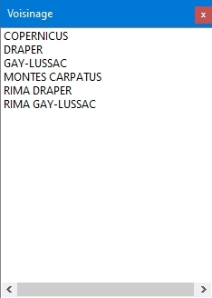
LE BOUTON "PHOTLUN"
Ce bouton "Image" donne
accès à PHOTLUN (c), le module évolué
de gestion des images de l'AVL.
Il fait apparaître la
bande des vignettes et la barre des menus de PHOTLUN.
Fenêtre "PhotLun" (c)
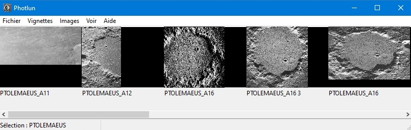
Ce module permet un choix plus facile des images à afficher grâce à la prévisualisation permise par les vignettes. Vous obtenez l'image originale de la vignette sur laquelle vous avez cliqué dans une fenêtre séparée.
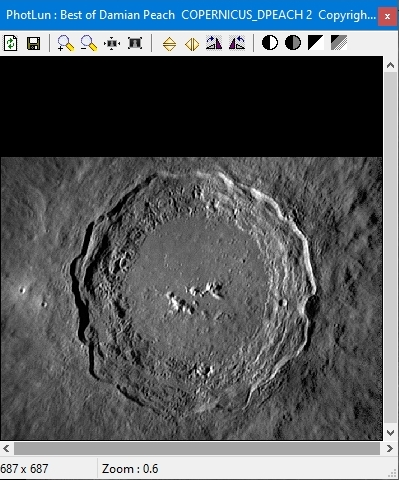
Nous vous renvoyons à la documentation spécifique de PHOTLUN pour en découvrir toutes les possibilités et notamment les fonctions de traitement d'images (Rotation, zoom, contraste et luminosité).
Les bibliothèques d'images
La bibliothèque d'images est modulaire, c'est à dire qu'on peut y ajouter autant de sources que l'on veut. Vous pouvez télécharger pour cette version des fichiers d'images provenant de six sources différentes
IMAGES DU "LUNAR ORBITER PHOTOGRAPHIC ATLAS OF THE MOON"


"Aristillus" et "Vallis Alpes"
La bibliothèque d'images de l'AVL contient dans cette version les images de plus de 1000 formations. Ces images ont été obtenues à partir des planches de la version électronique du "Lunar Orbiter Photographic Atlas of the Moon" (LOPAM) réalisée par l'équipe de Jeff Gillis au Lunar and Planetary Institute. Ce remarquable travail est consultable sur le site :
http://www.lpi.usra.edu/research/lunar_orbiter/
Christian Legrand a extrait à partir de chacune des 200
planches du LOPAM des images de chaque formation qui s'y trouvait.
Il a ainsi "récolté" 3000 images
utilisables. Puis, il a fallu choisir les meilleures d'entre elles
pour chaque formation.
Pour certaines formations qui étaient
coupées entre plusieurs images, il a fallu raccorder les
morceaux en ayant parfois appliqué des traitements sur leur
orientation et leur forme. Puis il a fallu compresser ces clichés
en trouvant un compromis entre qualité et taille du fichier
afin de les rendre facilement téléchargeables.
Malgré
cet important travail, environ 150 formations nommées n'ont
pû être retrouvées dans le planches compte tenu
du fait que la sonde Lunar Orbiter 4 n'a pas cartographié
la totalité de la face visible avec
une résolution suffisante.
Ces images sont
fournies sous le copyright général du "Lunar
and Planetary Institute" détenteur des droits de
reproduction et ne peuvent utilisées en dehors du logiciel.
IMAGES DES MISSIONS APOLLO
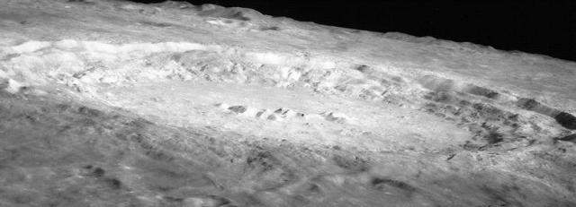
Copernicus vu par les astronautes de la mission Apollo 12
Toujours dans le but de fournir une vision la plus complète
possible des formations lunaires, Christian Legrand a extrait à
partir de plus de 1000 clichés de la NASA des images des
formations qui s'y trouvait. Il a ainsi "récolté"
500 images utilisables. Puis, il a fallu choisir les meilleures
d'entre elles pour chaque formation.
Ces images sont
fournies sous le copyright général de la "National
Air and Space Administration" (NASA) détentrice des
droits de reproduction ( cf http://www.nasa.gov
)et ne peuvent utilisées en dehors du logiciel .
Le
nom des photos indique le nom de la formation ainsi que la mission
Apollo au cours de laquelle fut pris le cliché lorsqu'elle
est connue : ainsi COPERNICUS_A12.JPG est le nom de l'image ci
dessus.
APOLLO MAPPING CAMERAS MISSIONS

Theophilus vu par la Mapping Camera de Apollo 16.
Mis en ligne par le "Lunar and Planetary
Institute", les photos des "Apollo Mapping
Cameras" qui étaient à bord des modules de
service des missions Apollo sont parmi les plus détaillées
de la surface lunaire jamais réalisées..
Christian
Legrand a sélectionné parmi les planches publiées,
des centaines d'extraits qui montrent les plus belles vues
des formations de la Face visible.et a ainsi extrait environ 1000
images et en a sélectionné environ 700.
Ces
images sont fournies sous le copyright du "Lunar and
Planetary Institute" et elles ne peuvent être utilisées
en dehors de l'atlas.
Le nom de l'image indique le nom de
la formation et la mission Apollo qui a prise l'image originale
quand il est connu. : ainsi COPERNICUS_A12.JPG est le nom d'une
image de Copernicus prise pendant la mission Apollo 12.
Les
images APOLLO MAPPING sont dans le répertoire
"Apollomapping"
IMAGES DES SONDES LUNAIRES
D'autres sondes que Lunar Orbiter 4 ont mesuré et photographié la Lune. Il s'agit des sondes américaines Ranger, Lunar Orbiter 1,2,3,5 et des Surveyor. Dans le contexte historique de la course à la Lune, l'ex Union Soviétique a aussi lancé un grand nombre de sondes Luna.


La base du Luna 17 soviétique photographiée
par le robot mobile Lunakhod 1 (A gauche) et le panorama des
flancs du cratère Tycho pris par la sonde américaine
Surveyor 7 (A droite).
Cette photothèque
réalisée par Christian Legrand rassemble 120 clichés
pris par ces différentes sondes.
Ces images sont
sous le copyright général de la NASA (
http://www.nasa.gov ) en ce qui
concerne les sondes américaines. Les images des sondes
russes n'ont pas de détenteurs de droits clairement
identifiés. Ces images ne peuvent utilisées en
dehors de l' "Atlas Virtuel de la Lune".
Les
noms des photos indique le nom de la formation ainsi que la sonde
ou la mission Apollo qui a pris le cliché. Les diminutifs
suivants sont utilisés dans lequel XX indique le numéro
de la mission :
- A : Apollo
- LO : Lunar Orbiter
-
LU : Luna
- RA : Ranger
- SU : Surveyor
Par
exemple, LUNA 9_LU9.jpg est une image du site de Luna 9 prise par
la sonde Luna 9 elle-même. De même SURVEYOR 3_A12.jpg
est une photo de Surveyor 3 prise lors de la mission Apollo
12.
Les photos des sondes sont accessibles à partir du
nom de la formation s'il s'agit d'une image de formation, ou à
partir du nom des sondes s'il s'agit d'une photo de site
d'alunissage prise par la sonde.
Les images des sondes
lunaires sont rangées par défaut dans le
sous-répertoire "Sondes"
IMAGES
DE LA SONDE CLEMENTINE
Une autre grande source d'images
de formations lunaires est due à la mission américaine
"Clementine". Cette petite sonde a cartographié
avec une résolution atteignant 100 à 200 m par pixel
sur certains clichés la quasi totalité de la surface
lunaire.
Les images de Clementine sont complémentaires
de celles du LOPAM. Si leur résolution et leur qualité
générale est meilleure, elles ont un défaut
pour les observateurs terrestres, elles ont été
prises alors que le Soleil était au méridien de la
formation photographiée. C'est à dire avec un
éclairage vertical qui gomme les ombres et met en valeur
l'albédo de la formation. C'est par
contre un avantage pour la vision des éjectas de cratères
et des cratères récents.
Pour les
formations situées dans une bande comprise entre + 45 °
Nord et - 45 ° Sud, les clichés donnent donc avant tout
des indications sur l'albédo de la formation photographiée.
Comparez par exemple les images de Bessarion LOPAM et Clementine
pour voir la différence.
Pour les formations situées
au delà de ces coordonnées en allant vers les pôles,
des ombres apparaissent et certaines se révèlent
plus détaillées que celles du LOPAM. Comparez en
regardant les images du cratère Arzachel par exemple.
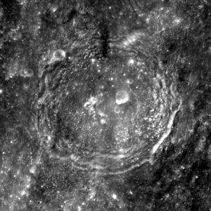
Image du cratère Arzachel prise par Clementine.
Christian Legrand a extrait et
retraité les images des formations lunaires du fichier
général fourni par l'USGS. ". Toutefois,
compte tenu de l'existence de la texture "Clementine
photographique à haute résolution de 500 m, la
production de nouvelles images Clementine est actuellement
arrêtée.
Ces images sont fournies sous
le copyright général de laNASA détentrice des
droits de reproduction et ne peuvent utilisées en dehors du
logiciel.
Les images de Clementine sont rangées
par défaut dans le sous-répertoire "Clementine".
IMAGES DE LA SONDE JAPONAISE KAGUYA

Ces images ont été obtenues à partir des
images prises par la sonde japonaise KAGUYA et mises en ligne sur
le site de la Japan_Aerospace_eXploration_Agency (JAXA).
Ce remarquable travail est consultable sur le site
:
http://wms.selene.jaxa.jp/index_e.html
Christian
Legrand a extrait à partir de chacune des photos des images
de chaque formation qui s'y trouvait. Il a ainsi "récolté"
160 images utilisables. Il s'agit d'images de formations prises
obliquement, ce qui apportent de nouvelles données sur la
forme réelle des formations (cf Rupes Recta ci-dessus)
Ces
images sont fournies sous le copyright général de la
"Japan_Aerospace_eXploration_Agency" détenteur
des droits de reproduction et ne peuvent utilisées en
dehors du logiciel.
EUROPEAN SMART-1 PROBE PICTURE
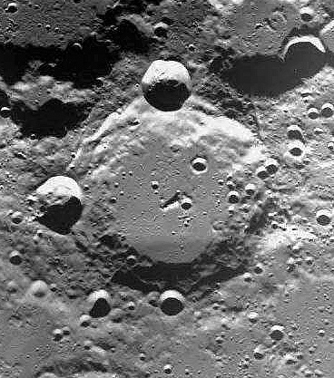
Le cratère Pascal photographié par Smart-1 (c) ESA
Ces images ont été obtenues à partir des images prises par la sonde européenne Smart-1 et mises en ligne sur le site de la European Space Agency (ESA) archives Web site. Ce remarquable travail est consultable sur le site :
https://archives.esac.esa.int/psa/#!Table%20View
Christian
Legrand a extrait à partir de certaines photos des images
de chaque formation qui s'y trouvait. Il a ainsi "récolté"
102 images utilisables. Il s'agit d'images de formations prises
souvent avec un angle vertical par rapport à la surface obliquement, ce qui apportent de nouvelles données sur la
forme réelle de ces formations rareùment imagées (cf Pascal ci-dessus)
Ces images sont fournies sous le copyright général de la "European_Space_Agency" détenteur des droits de reproduction et ne peuvent utilisées en dehors du logiciel.
IMAGES DU CONSOLIDATED LUNAR ATLAS
L'un des meilleurs atlas photographiques de la Lune réalisé
depuis la Terre jamais publié est le "Consolidated
Lunar Atlas " de Gerard Kuiper et son équipe.
Il
est la compilation des meilleures images prises depuis la Terre
par quelques grands observatoires dont l'observatoire de Catalina,
du Pic du Midi. La résolution de certaines d'entre elles
atteint ou dépasse le km et ne sont surpassées que
depuis peu par des amateurs puissamment équipés
maîtrisant l'utilisation des webcams...
Cet atlas est
d'une valeur inestimable pour les observateurs terrestres, car
comme pour "l'atlas photographique de la Lune de Georges
Viscardy", les planches photographiques qui le constituent,
ont été prises avec des hauteurs du Soleil
différentes, vers le lever et le coucher de celui-ci sur
les formations et aussi lors de la Pleine Lune.
Voici par
exemple quelques extraits des planches concernant le cratère
Archimedes :


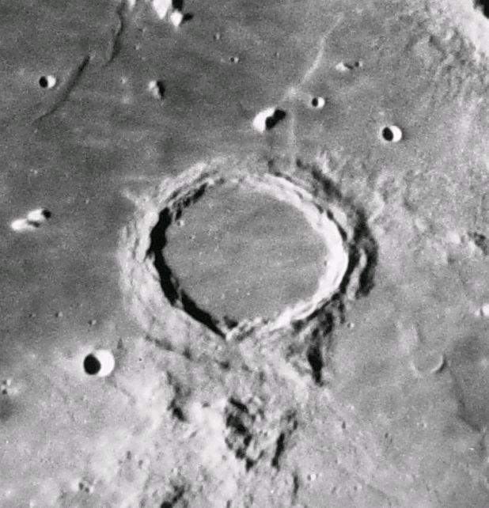

Ces images permettent de voir l'aspect des formations
prévisible en fonction du jour de leur observation. Elle
comporte plus de 3000 images. Toutefois, compte tenu des nouvelles
textures "Haute résolution" maintenant
disponibles, la production de ces images est maintenant
stoppée.
Ces images sont fournies sous le
copyright général du "Lunar and Planetary
Institute" détenteur des droits de reproduction et ne
peuvent utilisées en dehors du logiciel.
Ce
remarquable travail est consultable sur le site
:
http://www.lpi.usra.edu
Les
images du Consolidated Lunar Atlas sont rangées par défaut
dans le sous-répertoire "CLA".
IMAGES DES LUNAR ASTRONAUTICAL CHARTS ET DES LUNAR MAPS
Les meilleures cartes dessinées de la Lune jamais publiées sont les "Lunar Astronautical Charts" et les "Lunar Maps". Leur échelle est au 1 000 000 ème. La plupart comportent le tracé de courbes de niveau d'altitude permettant de déterminer les hauteurs ou profondeurs des formations.


Christian Legrand a ainsi extrait des LAC / LM plus de 800
images de formations nommées de la Face Visible. Compte
tenu de leur précision et des couleurs utiles, ces images
n'ont pas été compressées. Cette bibliothèque
d'images est donc lourde à télécharger.
Ces
images sont fournies sous le copyright général du
"Lunar and Planetary Institute" détenteur des
droits de reproduction et ne peuvent utilisées en dehors du
logiciel.
Ce remarquable travail est consultable sur le
site :
http://www.lpi.usra.edu
Les
images des Lunar Astronautical Charts et des Lunar Maps sont
rangées par défaut dans le sous-répertoire
"LAC / LM".
Cet ensemble de bibliothèque
d'images des formations permet de disposer de clichés
permettant des comparaisons et études topographiques sur
les formations.
IMAGES
DES MEILLEURS ASTROPHOTOGRAPHES LUNAIRES
Les meilleures astrophotographes lunaires ont acceptés que les formations individuelles soient extraites de leurs images brutes par Christian Legrand et incorporées ensuite dans une bibliothèque d'images au format de l'AVL.
ATTENTION : Ces images sont fournies sous le copyright de chacun des auteurs originaux détenteur des droits de reproduction et ne peuvent utilisées en dehors de l'AVL. Toute autre utilisation doit faire l'objet d'une demande explicite auprès de l'auteur original. Nous les remercions d'avoir bien voulu accepter de les inclure dans l'AVL.
Vous trouverez les bibliothèques suivantes :
- T1MPDM / Télescope de 1 mètre du Pic du Midi : Elle contient les images réalisées par JL Dauvergne , F. Colas, C. Mansion, T. Legault et C. Villadrich avec le télescope de 1 m du Pic du Midi et contient les images lunaires les meilleures jamais réalisées depuis la surface de la Terre (Archimedes ci-dessous).

- Best of Peach: Elle contient les images réalisées par Damian Peach avec un Celestron 14 et un Celestron 9,25 (Bailly ci-dessous). C'est l'une des bibliothèque les plus fournies et les plus détaillées.

- Best of Lazzarotti : Elle contient les images réalisées par Paolo Lazzarotti avec son Gladius de 300 mm (Aristoteles ci-dessous).

- Best of Higgins : Elle contient les images réalisées par Wes Higgins avec son Dobson de 450 mm (Schiller ci-dessous) qui comptent parmi les meilleures.
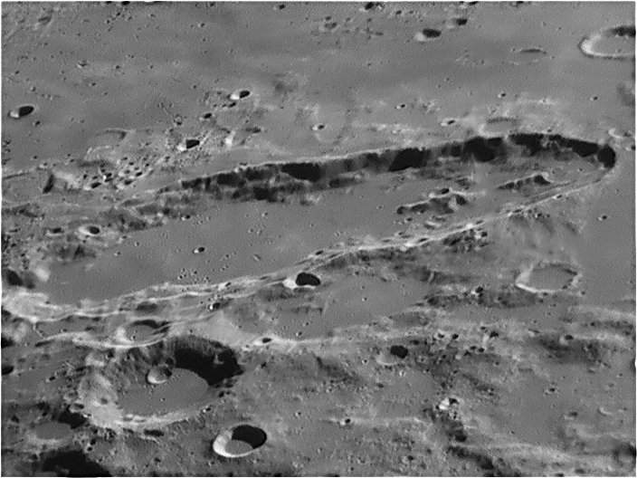
- Best of Amateurs : Elle contient les images réalisées par Mike Wirths (Les dômes d'Hortensius ci-dessous), Greg Zerbe et Zac Pujic.

- Best of Cathala:
Elle contient les images réalisées par Luc Cathala avec un télescope Dobson motorisé de fabrication personnelle de 625 mm de diamètre avec une caméra QHYSIII178M. C'est la bibliothèque "astronome amateur" la plus fournie avec près de 700 images à très haute résolution.

LE BOUTON "DATLUN "
En cliquant sur ce bouton, vous pouvez ouvrir la fenêtre
de "DATLUN" (c) qui est le gestionnaire de données
de l'AVL
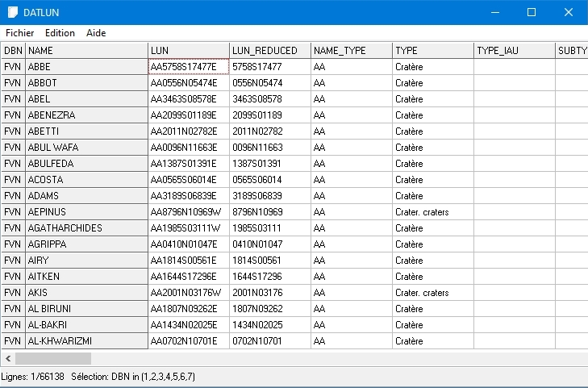
Vous pouvez découvrir tout le potentiel de ce module programmé par Patrick Chevalley en consultant son manuel spécifique.
LE BOUTON "WEBLUN "
En cliquant sur ce bouton, vous pouvez ouvrir la fenêtre
de "WEBLUN" (c) qui est le gestionnaire de sites Web
lunaires de l'AVL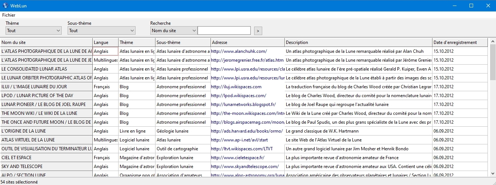
Vous pouvez découvrir tout le potentiel de ce module programmé par Patrick Chevalley et utilisant des données fournies par Christian Legrand en consultant son manuel spécifique.
LE BOUTON "Fenêtre 2 "
En cliquant sur ce bouton, la fenêtre carte se sépare
en deux fenêtres de largeur égale côte à
côte. Cette seconde fenêtre comporte les mêmes
fonctionnalités que la fenêtre principale. Vous avez
accès à la carte, au menu configuration, aux onglets
et au bouton "Globe entier". Pour rendre une fenêtre
active et accéder aux réglages et outils, il suffit
de cliquer une fois dedans. La fenêtre
active s'entoure alors d'un liseré rouge
Cette
seconde fenêtre s'ouvre avec la même région
lunaire que la première. Vous pouvez ainsi facilement
comparer les deux fenêtres. et vous pouvez appliquer dans
cette seconde fenêtre des textures et des couches
différentes de la première.
Ecran montrant la fenêtre principale de l'AVL 7
avec le bifenêtrage et la texture LOLA / Kaguya Shaded" à gauche et la texture "USGS Geological 2020" à droite.
La
fenêtre "Mère" qui est affectée par
le curseur est entourée d'un liseré rouge. Il suffit
de cliquer sur l'autre fenêtre pour qu'elle devienne active
à son tour et entourée de rouge.
Attention
! Cette nouvelle fonction est gourmande en ressources et nécessite
un ordinateur puissant pour pouvoir être exploitée
dans toutes ses possibilités simultanément (Si
possible fréquence supérieure à 2 Ghz, 2 Go
de RAM et carte graphique supportant OpenGL avec1 Go de RAM
Vidéo).
LE BOUTON "Plein écran"
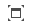
Si vous cliquez sur ce bouton, les onglets à droite, la barre de titre, la barre des menus et la barre d'état disparaissent toutes, ne laissant que la fenêtre "Carte", ou la double fenêtre "Carte" seulement sur l'écran.

Fabuleux pour les grands moniteurs, les télévisions
LCD et les vidéoprojecteurs !!! Egalement utile lors de
conférences ou pour les planétariums !
Un clic avec le bouton gauche sélectionne une
formation.
En restant appuyé sur le bouton gauche et
en bougeant la souris, vous faîtes bouger la carte. La
molette de la souris commande le zoom.
Vous avez toujours
accès au menu "clic droit" pour gérer les
outils.
Pour retrouver menus &
onglets, il suffit de pressez la touche "Esc" ou d'aller
dans le menu contextuel du "Clic droit" et cliquer sur
"Retour fenêtre".
LE BOUTON "OCULAIRES "
En
cliquant sur ce bouton, vous pouvez ouvrir directement l'onglet
"Oculaires" du menu "Configuration"avec un
accès direct à la liste des oculaires que vous avez
rentrée.
LE BOUTON "CCD "
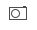
En
cliquant sur ce bouton, vous pouvez ouvrir directement l'onglet
"CCD" du menu "Configuration"avec un accès
direct à la liste des caméras que vous avez rentrée.
LE BOUTON "NOTES "
En cliquant sur ce bouton, vous
pouvez ouvrir directement l'onglet "Notes" à droite avec un accès
direct à l'outil de prise de notes.
LE BOUTON "EPHEMERIDES "
En
cliquant sur ce bouton, vous pouvez ouvrir directement l'onglet
"Ephémérides" avec un accès direct
à l'outil de balayage des dates & heures.
LE
BOUTON "ONGLETS "
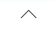
En
cliquant sur ce bouton, vous pouvez "détacher"
momentanément les onglets de droite pour agrandir la ou les
deux fenêtres "Carte" (En mode bi-fenêtrage).
Vous pouvez ensuite les positionner où vous le souhaitez
comme dans la copie d'écran ci-dessous. La fenêtre
"Onglets" possède les boutons "Windows"
pour la mettre en plein écran (Vision globale des onnées
"Informations", par exemple" ou la supprimer. La
flèche du bouton "Onglets" changera de sens et en
cliquant une seconde fois dessus, vous pourrez réafficher
les onglets.
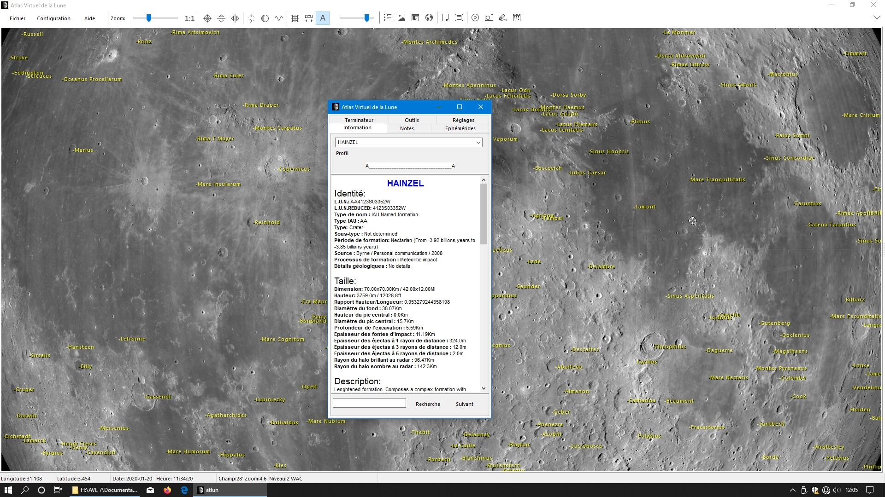
LE BOUTON "2EME MONITEUR "
Si
vous possédez deux moniteurs branchés sur votre ordinateur
comme sur la photo ci-dessous, en cliquant sur ce bouton, vous
pouvez faire apparaître momentanément les onglets de
droite sur ce second moniteur pour agrandir au maximum sur votre
écran principal la ou les deux fenêtres "Carte"
(En mode bi-fenêtrage) sans perdre les informations des
onglets. Votre souris devrait pouvoir se déplacer sur les
deux moniteurs.
La flèche du bouton changera de sens
et en cliquant une seconde fois dessus, vous pourrez réafficher
les onglets sur le premier moniteur.
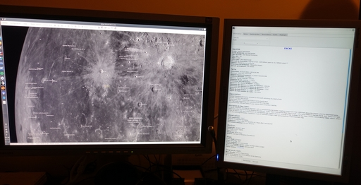
LA FENÊTRE CARTE
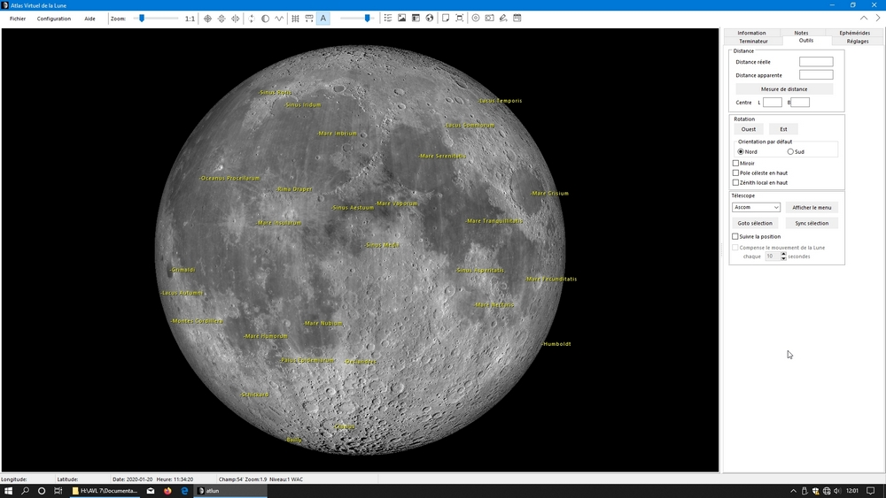
La fenêtre "Carte" se trouve dans la partie
gauche de la fenêtre générale.
A l'ouverture, elle montre la face visible depuis la Terre
avec la phase et la libration appliquées si vous avez coché
les cases nécessaires dans l'onglet "Affichage"
du menu "Configuration"
ou pressé les boutons adéquats
sur la barre de boutons. La carte est
inamovible. La carte de la Lune se déplace en cliquant sur le bouton
gauche de la souris, en le maintenant appuyé et en
déplaçant la souris.
La largeur de la fenêtre "Carte" peut être redimensionnée par rapport
aux onglets à droite. Placez le curseur sur la ligne de sépartion . Un
nouveau pointeur apparaît. Restez avec le bouton gauche de la souris
appuyé et bougez le à droite ou à gauche. La largeur de la fenêtre
"Carte" sera alors ajustée.

Il est aussi maintenant possible d'effacer les onglets à droite en appuyant le bouton
LA CARTE
Elle est, par défaut orientée de façon que
la Lune présentée soit dans le même sens que
vue à l'oeil nu ou dans des jumelles.
Vous pouvez
faire tourner la carte autour de son axe central pour vous
rapprocher de la vision dans l'oculaire d'un télescope de
type "Newton". Vous pouvez également afficher la
carte de la Lune vue comme dans un miroir pour vous rapprocher de
la vision dans l'oculaire d'un instrument muni d'un renvoi coudé
tel que lunette, télescope Cassegrain, Schmidt-Cassegrain,
Maksutov, Dall-Kirkham... ( Voir Onglet
"Outils" ).
La carte"Face visible"
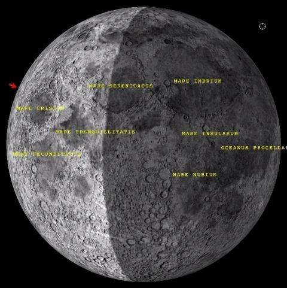
Elle montre uniquement la face visible de la Lune. Si l'option "Libration" (Voir Menu "Configuration") est choisie, le centre de la face visible n'est pas forcément au centre du dessin présenté vu l'influence de la libration.
La carte "Globe entier"

Elle permet de visualiser le globe lunaire dans
son intégralité et d'étudier la face
cachée invisible depuis la Terre (Sur la copie d'écran
ci-dessus, on remarque Mare Orientale).
Si les options
"Affiche la libration" et " Affiche la
phase " (Voir Menu
"Configuration") ou si les
boutons adéquats de la barre de boutons sont activés,
l'éclairage et l'inclinaison du
globe lunaire est conforme à l'éclairage réel
pour l'heure et la date choisie grâce à l'onglet "
Ephémérides" .
Déplacement de la carte
Dès qu'un facteur de zoom est appliqué à
la carte, il est possible de se déplacer dans celle-ci.
En
mode "Face visible", vous pouvez aussi "saisir"
le disque en faisant un clic gauche avec la souris sur une partie
de celle-ci et, en maintenant le bouton gauche appuyé, la
déplacer dans le sens souhaité en bougeant la
souris.
En mode "Globe entier", vous pouvez
aussi "saisir" la globe en faisant un clic gauche avec
la souris sur une partie de celle-ci et, en maintenant le bouton
gauche appuyé, la faire tourner dans le sens "Est"
ou "Ouest" ou «Nord» ou «Sud» en
bougeant la souris.
Clic droit de la souris
Un
clic droit de la souris sur une formation entraîne
l'apparition d'un menu contextuel comprenant plusieurs rubriques :
Information : Renvoie à la fenêtre "Base
de données" pour connaître les informations
relatives à la formation sélectionnée.
Notes
: Affiche la fenêtre "Bloc notes" pour
visualiser ou enregistrer vos données personnelles pour la
formation sélectionnée.
PhotLun : Lance
l'affichage du module PhotLun pour visualiser la ou des photos de
la formation sélectionnée.
Voisinage :
Affiche dans une fenêtre la liste des formations voisines de
la formation sélectionnée.
Centre :
Permet de centrer la carte sur la formation sélectionnée
ou de centrer le disque ou le globe lunaire lorsque le zoom est
"1:1".
Zoom : Permet de régler
directement le facteur de zoom à 1/1, 2/1 ou 4/1.
Oculaires
: Permet de choisir l'oculaire utilisé et de matérialiser
la vision exacte dans l'instrument. Un cache noir percé
d'un cercle transparent apparaît alors dans la fenêtre
carte. Pour l'enlever lorsqu'il est affiché, il suffit de
cliquer sur l'option "Aucun".
CCD :
Permet de choisir la caméra électronique à
utiliser et de matérialiser son champ exact sur la Lune. Un
cadre coloré apparaît alors.Pour l'enlever lorsqu'il
est affiché, il suffit de cliquer sur l'option "
Aucun".
Distance : Permet d'activer le
mode "Mesure de distance" (Voir "Mesure
de distance")
Satellisation : Actif seulement
dans le mode "Globe entier". Il permet d'activer
une rotation automatique pour faire défiler le globe comme
pour une satellisation. Les vitesses indiquées sont en
"degré de longitude par seconde" ou la rotation
manuelle du globe grâce à "Direction".
Plein
écran : Permet de faire disparaître les menus et les
onglets pour affecter la ou les deux fenêtres "Carte"
(En mode bi-fenêtrage) à toute la surface de l'écran.
Légende de couche :
Option activée seulement quand une couche est affichée sur la texture.
Notez que certaines couches n'ont pas de légendes trouvées (Cf
ci-dessus).
L'ONGLET "INFORMATION"
LE CADRE "Profil"
Dans ce cadre, s'affiche le profil de la
formation choisie dans votre recherche et dont la fiche apparaît
dans la fenêtre "base de données".
Il
s'agit d'un champ semi-graphique qui donne une idée du
profil en coupe de la formation. Cette information n'est fournie
que si la hauteur de la formation est indiquée. De même,
il n'a pas été généré pour les
types de formations suivants pour lesquels il n'est pas
représentatif :
- Golfe
- Lac
- Marais
-
Mer
- Mission humaine
- Océan
- Sonde
Les
cratères sont représentés comme suit :
A________________A
< n caractères _>
Les caractères "A"
visualisent la hauteur des parois du cratère. Le nombre de
caractères "_" matérialise, à
l'échelle des parois la largeur du cratère.
Dans
l'exemple ci-dessus, le rapport entre la hauteur et la largeur du
cratère est de 1/8
Les massifs montagneux centraux
n'ont pas été visualisés, car leur hauteur
propre poserait des difficultés pour la représentation
en mode semi-graphique.
Chaque profil est caractéristique
d'une formation. De ce fait, seule la forme du profil est
représentative. Mais on ne peut pas comparer les dimensions
des profils de deux formations.
Exemple :
A__________A Profil de (Largeur =20 km & hauteur = 4000 m)
A__________A Profil de (Largeur = 5 km & hauteur = 1000 m)
A l'écran, les profils sont les mêmes, mais comme on peut le voir, les dimensions sont très différentes.
Pour les montagnes, chaînes de montagnes, dômes et dorsales, un autre mode de visualisation du relief a été utilisé :
___A___
Le caractère "A"
visualise la hauteur de la montagne. Le nombre de caractères
"_" matérialise, à l'échelle de la
hauteur, la largeur moyenne de la montagne à sa base.
Dans
l'exemple ci-dessus, le rapport entre la largeur et la hauteur est
de 1/7, soit typique d'une montagne telle que Mons Pico.
Pour les rainures, systèmes de rainures et les vallées, le profil est visualisé de la façon suivante :
___ ___
V
Le caractère "V"
visualise la profondeur de la rainure. Le nombre de caractères
"_" matérialise, à l'échelle de la
hauteur, la largeur de la rainure.
Dans l'exemple ci-dessus,
le rapport entre la largeur et la hauteur est de 1/7. Précisons
que nous n'avons pu retrouver dans les ouvrages sur la Lune que la
profondeur de peu de rainures.
LA
FENÊTRE "BASE
DE DONNÉES"

La fenêtre "Base de données" est
organisée de façon à afficher les
informations correspondant à la formation choisie. Elle
dispose d'un ascenseur au cas où la totalité des
données ne tiendrait pas dedans.
La base de données
de la version 7 est la plus importante base de
données lunaires existante à ce jour. Les fichiers
représentent près de 300 Mo de texte en
français et autant en anglais ! Elle contient les fiches
descriptives de plus de 1 million 300 000 formations lunaires avec des
quantités de données variables pour chacune selon les bases
officielles dont elles sont issues.
Elle
est séparée en huit bases distinctes :
- FORMATIONS NOMMEES : Les formations des faces visible & cachée qui ont un nom spécifique validé par l’UAI ( ex : Clavius, Rima Hyginus, Montes Alpes...) : (1 800 entrées environ)
- FORMATIONS SATELLITES : Les formations des faces visible &
cachée qui n'ont pas un nom spécifique, mais un
indice lettré adossé à un nom officiel et qui
sont validées par l’UAI ( ex : Clavius D, Hyginus
A...) : (7 000 entrées environ)
- SALAMUNICCAR FORMATIONS NON NOMMEES : Les formations des faces visible & cachée
qui n'ont pas un nom spécifique, ni un indice et qui ne
sont pas validées par l’UAI. Celles-cisont issues du
travail mené par Goran Salamuniccar de la Faculty of
Electrical Engineering and Computing, University of Zagreb et son
équipe (Base LU 78 287) qui nous a donné la
permission de les inclure dans l'AVL (Merci à lui !). Le
nom de ces formations est représenté par le LUN
(Lunar Universal Number) mis au point par Christian Legrand
spécialement pour l'AVL : (69 600 entrées environ)
ATTENTION ! Compte tenu du nombre
extrèmement important de formations répertotiées dans cette base que le
logiciel doit affichée, il est conseillée de ne l'utiliser qu'avec des
niveaux de zoom correspondant aux niveaux L4 à L6. L'affichage de
toutes les formations peut demander un certain délai. Nous conseillons
également de cocher la case "Label court" dans le menu "Configuration /
Affichage" pour ne pas trop encombrer la carte avec les labels.
-
ROBBINS UNNAMED FORMATIONS : Les formations des faces
visible & cachée qui n'ont pas un nom spécifique,
ni un indice et qui ne sont pas validées par l’UAI.
Celles-ci sont issues du travail mené par Stuart J. Robbins
du Southwest Research Institute (Robbins Lunar Crater Database
2018-08-15) qui nous a donné la permission de les inclure
dans l'AVL (Merci à lui !). Le nom de ces formations est
représenté par le LUN (Lunar Universal Number) mis
au point par Christian Legrand spécialement pour l'AVL : (1
300 000 entrées environ). Cette base ne comporte que 4
champs repris de la base de S. J. Robbins pour ne pas alourdir la
performance d'affichage de l'AVL.
ATTENTION ! Compte tenu du nombre extrèmement important de formations
répertotiées dans cette base que le logiciel doit affichée, il est
conseillée de ne l'utiliser qu'avec des niveaux de zoom correspondant
aux niveaux L4 à L6. L'affichage de toutes les formations peut demander
un certain délai. Nous conseillons également de cocher la case "Label
court" dans le menu "Configuration / Affichage" pour ne pas trop
encombrer la carte avec les labels.
- SITES HISTORIQUES : Sites historiques des deux faces :
Les sites de tous les impacts volontaires ou accidentels d'origine
humaine compilée spécialement pour l'AVL par
Christian Legrand (ex : Apollo 15 Base, Ranger 7, Luna 9, Apollo
17 S-IVB, Chang'é, Chandrayann 2 ...) (59 entrées)
- FORMATIONS PYROCLASTIQUES : La liste des dépôts
pyroclastiques compilée par Lisa Gaddis et son équipe
(80 entrées)
- DOMES : Une liste de
dômes volcaniques lunaires compilée par les membres
de l'association ALPO (700 entrées)
- NELIOTA IMPACTS : La liste des impacts météoritiques
contemporains sur la surface lunaire répertoriés par l'Observatoire
d'Athènes dans le cadre du programme NELIOTA (Near Earth Lunar
Impacts) piloté par l'Agence Spatiale Européenne (ESA).
Pour chaque formation, les informations mentionnées sont
relatives à :
- le type et l'origine géologique
de la formation
- les dimensions et la description de la
formation.
- divers renseignements utiles pour
l'observation
- la localisation de la formation sur le disque
lunaire.
- la mention des cartes et pages présentant
la formation dans les principaux atlas de la Lune disponibles
-
l'origine du nom de la formation.
- les
données officielles de
2012 de l’Union
Astronomique internationale concernant cette formation.
Compte tenu des provenances variées
des différentes databases, certaines informations peuvent ne pas être
disponibles dans une base donnée.
Par ailleurs, dans un document aussi important par la taille, il doit certainement rester des erreurs de saisie malgré le soin apporté. Si vous en détectez, ous pouvez les indiquer à Christian Legrand. Elles seront corrigées dès que possible. L'auteur vous remercie par avance pour votre collaboration.
La base de données de l'AVL sera constamment augmentée dans les futures versions afin d'apporter de plus en plus de renseignements sur toujours plus de formations. Surveillez notre site Web pour voir les mises à jour.
ATTENTION : Les informations des bases de données de l' "Atlas Virtuel de la Lune" sont fournies sous le copyright "(c) Christian Legrand" et ne peuvent être utilisées en dehors de ce programme. Pour tout autre utilisation veuillez contacter Christian Legrand.
DESCRIPTION DETAILLEE DES INFORMATIONS DES BASES DE DONNEES :
NOM :
Le nom principal de la formation en latin utilisé
officiellement par l'Union Astronomique Internationale en
majuscules est affiché en caractères majuscules
bleus en haut de la fenêtre.
Dans la base "Sites
historiques", c'est le nom de la mission (ex : Apollo 15
Base, Ranger 7, Luna 9, Apollo 17 S IV B...)
Pour
les cratères anonymes, le "nom" utilise le L.U.N.
© qui est défini ci-dessous.
Pour les dômes et les dépôts pyroclastiques, le nom reprend celui de la base originale.
NOM LOCAL :
Le nom principal de la formation traduit dans la langue du programme quand il existe et est connu (Exemple : Platon / Nom français pour Plato / Nom officiel UAI)
LUNAR UNIVERSAL NUMBER / L.U.N. © :
Afin de pouvoir reconnaître les formations n'ayant pas encore de nom officiel et pour uniformiser les dénominations utilisées dans les nouvelles bases de données, Christian Legrand a mis au point le "Lunar Universal number" (LUN) permettant de connaître la nature et la position de la formation rien qu'en le lisant.
Voici les
caractéristiques du LUN :
Le LUN est formé
de la concaténation des caractères suivants
XX
: 2 lettres correspondant au “Descriptor term” de
l’UAI. Ces abréviations sont officiellement utilisées
par l'UAI et sont obligatoirement utilisés.
Attention, il y en a moins que de types originaux dans
l’AVL, donc plusieurs types AVL peuvent avoir le même
“descriptor term”.
Voici la liste officielle des IAU Descriptor Terms génériques (Certains ne sont d'ailleurs pas utilisés sur la Lune pour l'instant)
Albedo Feature (AL) |
Etendue géographique se distinguant par la quantité de lumière réfléchie |
Arcus, arcūs (AR) |
Formation en arc de cercle |
Catena, catenae (CA) |
Chaîne de cratères |
Cavus, cavi (CB) |
Dépressions à pentes irrégulières généralement groupées en réseau ou amas |
Chaos, chaoses (CH) |
Région distincte de terrain brisés |
Chasma, chasmata (CM) |
Dépression allongée à pentes abruptes |
Collis, colles (CO) |
Petites collines ou monticules |
Corona, coronae (CR) |
Formation de forme ovoïde |
Crater, craters (AA) |
Dépression circulaire |
Dorsum, dorsa (DO) |
Crête |
Facula, faculae (FA) |
Tache brillante |
Farrum, farra (FR) |
Structure en forme de Pancake ou rangée de telles structures |
Flexus, flexūs (FE) |
Arête très basse et courbée avec un dessin crantelé |
Fluctus, fluctūs (FL) |
Trace d'écoulement |
Fossa, fossae (FO) |
Dépression longue et étroite |
Insula, insulae (IN) |
Terre isolée entourée par une étendue liquide ou solidifiée. |
Labes, labēs (LA) |
Eboulement |
Labyrinthus, labyrinthi (LB) |
Complexe de vallées et de crêtes s'entrecroisant. |
Lacus, lacūs (LC) |
"Lac" ou petite plaine |
Landing site name (LF) |
Formation lunaire à proximité des sites d'alunissages Apollo |
Large ringed feature (LG) |
Grandes structures circulaires |
Linea, lineae (LI) |
Marque allongée sombre ou brillante pouvant être droite ou courbée |
Lingula, lingulae (LN) |
Extension de plateau avec des bords lobés ou arrondis |
Macula, maculae (MA) |
Tache sombre pouvant être irrégulière |
Mare, maria (ME) |
"Mer"; large plaine circulaire |
Mensa, mensae (MN) |
Une proéminence à toit plat avec des côtés en forme de falaise |
Mons, montes (MO) |
Montagne |
Oceanus, oceani (OC) |
Très grande région sombre sur la Lune |
Palus, paludes (PA) |
"Marécage" ou petite plaine |
Patera, paterae (PE) |
Cratère irrégulier ou cratère complexe avec des côtés crantelés |
Planitia, planitiae (PL) |
Basse plaine |
Planum, plana (PM) |
Plateau or haute plaine |
Promontorium, promontoria (PR) |
Cap ou promontoire |
Regio, regiones (RE) |
Vaste région marquée par une réflectivité ou une couleur distincte des régions adjacentes. |
Rima, rimae (RI) |
Fissure |
Rupes, rupēs (RU) |
Escarpement |
Satellite Feature (SF) |
Formation partageant le nom d'une formation associée. Sur la Lune, les cratères "lettrés" sont classés comme des "Satellite Features." |
Scopulus, scopuli (SC) |
Escarpement lobé ou irrégulier |
Sinus, sinūs (SI) |
"Baie" ou petite plaine |
Sulcus, sulci (SU) |
Fossés et crêtes parallèles |
Terra, terrae (TA) |
Masse de terrain étendue |
Tessera, tesserae (TE) |
Terrain polygonal comme constitué de tuiles |
Tholus, tholi (TH) |
Petite montagne ou colline |
Unda, undae (UN) |
Dunes |
Vallis, valles (VA) |
Vallée |
Vastitas, vastitates (VS) |
Plaine étendue |
Virga, virgae (VI) |
Trace colorée |
YYYYYN ou YYYYYS pour la latitude numérique en millièmes de degrés. Le N et le S indiquent Nord ou Sud et servent à séparer la latitude de la longitude pour s’y retrouver dans la chaîne de caractères. Les trois derniers chiffres de droite pour les millièmes de degrés sont toujours présents, même s'il s'agit de zéros. Les deux premiers chiffres de gauche sont absents si la latitude est de 00°
ZZZZZZ pour la longitude numérique en milliièmes de degrés comptée vers l’Est jusqu’à 359,999°. Les trois derniers chiffres de droite pour les milliièmes de degrés sont toujours présents, même s'ils s'agit de zéros. Les trois premiers chiffres de gauche sont absents si la longitude est de 000°
Voici deux exemples fictifs de LUN (AAYYYYYNZZZZZZ) :
-
AA2741S114220 : Cratère situé à 02,741°
Sud et à 114,220° E
- RI85000N000 : Rainure dont
le milieu est approximativement situé à 85,00°
Nord et 0,00° Est.
Avec ces astuces, le LUN est toujours
le plus court possible et il reste facilement
« interprétable » à la
lecture. Par ailleurs, sa structure garantit un LUN unique par
formation.
Grâce au L.U.N. , vous pouvez désigner n'importe quelle formation lunaire sans ambiguité, ce qui permet de discuter entre observateurs sur des formations non nommées.
LUNAR UNIVERSAL NUMBER / L.U.N. REDUIT © :
Pour les cratères, il existe un LUN réduit ©
qui est le LUN dont on a retiré le « descriptor
term » propre aux cratères (AA).
TYPE DE NOM :
Ce champ contient la catégorie
du type de nom de la formation parmi :
-
Formation nommée
-
Formation satellite
-
Formation répertoriée
-
Formation anonyme (Non nommée)
TYPE DE FORMATION :
Ce champ contient le type de la formation en conformité
avec les définitions de l'Union Astronomique Internationale
ou traditionnels plus quelques ajouts spécifiques :
-
Cap
- Chaîne de cratères
- Chaîne de
montagnes
- Cratère
- Craterlet
- Dorsale
-
Dôme
- Escarpement
- Golfe
- Lac
-
Marais
- Mer
- Mission humaine (Lieu d'alunissage)
-
Montagne
- Plateau
- Plaine
- Plaine murée
-
Rainure
- Sonde (Lieu d'impact ou d'alunissage)
-
Système de dômes
- Système de dorsales
-
Système de rainures
- Vallée
La base "Sites historiques" contient des types spécifiques compte tenu que ces sites ne sont pas répertoriés officiellement par l'Union Astronomique Internationale.
- Mission
humaine / Atterissage
- Equipement inerte / Impact
volontaire
- Equipement inerte / Impact involontaire
-
Sonde / Impact volontaire
- Sonde / Impact involontaire
-
Sonde / Atterrissage
TYPE DE L'UAI :
Ce champ contient l'abrégé
du type de la formation en conformité avec les définitions
de l'Union Astronomique Internationale (Cf "Descriptor term"
du LUN) ou traditionnels plus quelques adaptations spécifiques
:
- TH (Tholus) a été choisi pour caractériser
les dômes volcaniques.
- Les dépôts
pyroclastiques n'ont pas de type de formation de l'UAI pouvant
s'appliquer directement. Leur a été attribué
le type PD (Pyroclastic deposit).
- Les sites "historiques"
n'ont pas de type de formation de l'UAI pouvant s'appliquer
directement. Leur a été attribué le type HS
(Historical Site).
SOUS - TYPE :
Ce champ contient des catégories de types spécifiques à chaque type de formation (Exemple : Craterlet / Cratère / Plaine murée pour les cratères). Ce champ n'a pas encore été totalement documenté dans la version 7.
PROCESSUS DE FORMATION :
Ce champ contient des information sur le processus géologique à l'origine de la formation (Exemple : Impact météoritique / Volcanisme extrusif / Extension tectonique...)
PERIODE DE FORMATION :
Ce champ contient des information sur la période géologique lunaire qui a vu l'apparition de la formation concernée. Ces informations sont pour la plupart issues de la "Improved lunar craters database" réalisé par Charles Byrne , Don E. Wilhelms(USGS) et leur équipe qui permettent la réutilisation de ces données.
Les 6 périodes généralement admises dans
la littérature actuelle sont :
Le Pré-Nectarien
: (-4550 MA à -3920 MA)
Le Nectarien : (-3920 MA à
-3850 MA)
L'Imbrien inférieur: (-3850 MA à
-3800 MA)
L'Imbrien supérieur: (-3800 MA à-3200
MA)
L'Eratosthénien : (-3200 MA à-1100 MA)
Le
Copernicien : (-1100 MA à nos jours)
MA = Millions d'années
Pour certaines formations,
il n'a pas été possible de trouver d'information
concernant la période de mise en place.
Est alors
indiqué "Période de formation non
trouvée".
Pour la base "Sites
historiques", c'est la date de lancement de la mission
qui est indiquée dans ce champ.
SOURCE DE LA PERIODE DE FORMATION :
Ce champ contient des information sur la source qui cite la vraisemblable période géologique lunaire qui a vu l'apparition de la formation concernée. Ces informations sont pour la plupart issues de la "Improved lunar craters database" réalisé par Charles Byrne , Don E. Wilhelms(USGS) et leur équipe qui permettent la réutilisation de ces données.
GEOLOGIE :
Ce champ contient des information géologiques intéressantes sur la formation concernée trouvée dans diverses sources.
TAILLE :
Les quatre champs suivants contiennent des données relatives aux dimensions des formations. Celles-ci varient selon les sources. On pourra donc trouver des valeurs différentes de celles d'autres ouvrages. Ont été indiqué en priorité les données émanant de l'Union Astronomique Internationale, puis celles d'autres sources lorsqu'elles paraissaient plausibles. Enfin, certaines dimensions ont été directement mesurée sur cartes ou atlas lorsqu'elles n'ont pu être trouvée dans la littérature. Dans la base "Sites historiques", ces champs sont vides.
Dimensions :
Ce champ donne la longueur en
kilomètres de la formation et la largeur. Dans le cas des
formations cratériformes, la longueur est dans la plupart
des cas égale à la largeur puisqu'il s'agit en fait
du diamètre moyen de la formation.
Ce
champ a été révisé avec les valeurs
issues de la "Improved lunar craters database" réalisé
par Charles Byrne , Don E. Wilhelms (USGS) et leur équipe
qui permettent la réutilisation de ces données. Un
grand merci à eux !
Hauteur
:
Ce champ traduit des altitudes relatives et non pas des
altitudes absolues prises en référence à la
sphère lunaire moyenne, et donne la hauteur moyenne en
mètres de la formation lorsqu'elle est connue.
Dans le
cas des cratères, la hauteur est la différence
d'altitude moyenne entre le haut de la muraille et le fond du
cratère.
Pour les autres formations, il s'agit de la
différence d'altitude entre le sommet de la formation et
les terrains avoisinants.
Pour les chaînes de
montagnes, il s'agit d'une hauteur moyenne, et l'altitude atteinte
par les plus hauts sommets est souvent indiquée en plus
dans les rubriques de description.
Pour les rainures et
escarpements, le nombre indique en fait la dénivellation en
mètres entre le sommet et le bas de la formation.
Ce
champ a été révisé avec les valeurs
issues de la "Improved lunar craters database" réalisé
par Charles Byrne , Don E. Wilhelms (USGS) et leur équipe.
Rapport
hauteur / longueur :
Cette donnée n'est indiquée que pour les formations dont la hauteur est indiquée et en particulier pour de nombreux cratères. Elle représente le rapport entre le diamètre du cratère et sa profondeur lorsque celle-ci est connue. Ce ratio donne une bonne indication sur le profil général de la formation.
Diamètre du fond :
Dans le cas des cratères, ce champ contient des information sur la dimension du fond du cratère. Ces informations sont issues de la "Improved lunar craters database" réalisé par Charles Byrne , Don E. Wilhelms (USGS) et leur équipe.
Hauteur du pic central :
Dans le cas des cratères, ce champ contient des information sur la hauteur du pic central du cratère si celui-ci en possède un. Ces informations sont issues de la "Improved lunar craters database" réalisé par Charles Byrne , Don E. Wilhelms (USGS) et leur équipe.
Profondeur de l'excavation :
Dans le cas des cratères, ce champ contient des information sur la différence d'altitude entre le sommet du rempart du cratère et le fond de celui-ci. Ces informations sont issues de la "Improved lunar craters database" réalisé par Charles Byrne , Don E. Wilhelms (USGS) et leur équipe.
Epaisseur des fontes d'impact :
Dans le cas des cratères, ce champ contient une estimation de l'épaisseur des roches fondues lors de l'impact et qui remplissent le fond du cratère. Ces informations sont issues de la "Improved lunar craters database" réalisé par Charles Byrne , Don E. Wilhelms (USGS) et leur équipe.
Epaisseur des éjectas à 1 rayon de distance :
Dans le cas des cratères, ce champ contient une estimation de l'épaisseur des roches éjectées lors de l'impact et déposées sur les pentes externes du cratère à une distance du sommet du rempart correspondant à un rayon de ce même cratère. Ces informations sont issues de la "Improved lunar craters database" réalisé par Charles Byrne , Don E. Wilhelms (USGS) et leur équipe.
Epaisseur des éjectas à 3 rayons de distance :
Dans le cas des cratères, ce champ contient une estimation de l'épaisseur des roches éjectées lors de l'impact et déposées sur les pentes externes du cratère à une distance du sommet du rempart correspondant à trois fois le rayon de ce même cratère. Ces informations sont issues de la "Improved lunar craters database" réalisé par Charles Byrne , Don E. Wilhelms (USGS) et leur équipe.
Epaisseur des éjectas à 5 rayons de distance :
Dans le cas des cratères, ce champ contient une estimation de l'épaisseur des roches éjectées lors de l'impact et déposées sur les pentes externes du cratère à une distance du sommet du rempart correspondant à cinq fois le rayon de ce même cratère. Ces informations sont issues de la "Improved lunar craters database" réalisé par Charles Byrne , Don E. Wilhelms (USGS) et leur équipe.
Rayon du halo brillant au radar :
Dans le cas des cratères, ce champ contient une estimation du rayon du halo donnant une image radar brillante en périphérie immédiate du sommet du rempart du cratère. Ces informations sont issues de la "Improved lunar craters database" réalisé par Charles Byrne , Don E. Wilhelms (USGS) et leur équipe.
Rayon du halo sombre au radar :
Dans le cas des cratères, ce champ contient une estimation du rayon du halo donnant une image radar sombre en périphérie du cratère. Ces informations sont issues de la "Improved lunar craters database" réalisé par Charles Byrne , Don E. Wilhelms (USGS) et leur équipe.
DESCRIPTION
Cette rubrique est divisé en plusieurs champs réservés à la description en clair de la formation. Néanmoins, cette division est transparente lors de la consultation de la fiche de la formation à l'écran ou son impression. La localisation des différents constituants de la formation est indiquée par les points cardinaux, la référence étant appliquée à la partie médiane ou centrale de la formation. Pour un cratère, la référence est le centre du cratère.
Pour une Lune observée à l'oeil nu, le Nord se trouve en haut, le Sud en bas, l'Est à droite et l'Ouest à gauche.
Nord
Nord-Ouest___________________Nord-Est
Centre de
la formation
Sud-Ouest_____________________Sud-Est
Sud
Par exemple, un craterlet située sur la muraille d'un
cratère en bas à gauche sera indiqué :
"Muraille chevauchée par un craterlet au
Sud-Ouest".
Les cratères constituants la majeure
partie des formations, leur description est divisée en
quatre parties.
Description générale :
Sont tout d'abord mentionnées des informations sur la forme, sur l'état ou sur la situation de la formation. Cette rubrique est remplie pour toutes les formations.
Description des versants extérieurs :
Les versants décrits sont les pentes externes des
cratères. En règle générale, il s'agit
d'indiquer la pente des versants. Cela va de "peu escarpés"
si elle est très faible jusqu'à très
escarpés" si le sommet des versants est nettement au
dessus des terrains environnants.
Si des ondulations ou des
vallées radiales marquées sont présentes, les
versants sont déclarés "tourmentés".
Cette partie indique également les cratères et
craterlets qui sont portés par les versants de la
formation.
Description de la muraille interne :
La muraille décrite est, cette fois, celle des pentes
internes du cratère. Ce sont les véritables murs du
cratère qui relient le bord supérieur des versants
au fond du cratère. La muraille est déclarée
"peu élevée" lorsque la dénivellation
ne dépasse pas réellement ou apparemment environ
2000 mètres, "assez élevée" entre
2000 et 3000 m, "élevée" entre 3000 et
4000 m et "très élevée" au delà
de 4000 mètres de dénivellation.
Des
informations parfois contradictoires ont été
relevées dans différentes sources bibliographiques.
Dans ce cas, celles qui ont été utilisées
sont celles qui paraissaient les plus plausibles à partir
de l'observation.
Cette partie indique également les
cratères et craterlets qui sont portés par la
muraille de la formation.
Description du fond du cratère :
Le fond du cratère est déclaré "plat" ou "tourmenté" si sa texture est irrégulière. Si sa forme n'est pas circulaire, elle est mentionnée. De même, s'il semble que le fond du cratère ait été rempli par un épanchement de lave ultérieur, cette particularité est mentionnée. Cette partie indique également les cratères et craterlets qui sont portés par le fond de la formation.
Sites historiques :
Dans la base "Sites historiques", des descriptions
spécifiques sont mentionnées :
- Heure et date
de lancement
- Nom des astronautes en cas de mission
humaine
- Description de la sonde ou du vaisseau spatial
utilisé
- Heures et dates des principales phases de la
mission
- Principaux résultats scientifiques
DESCRIPTION DE ELGER
Cette rubrique contient la traduction de la description de la formation concernée telle que l'a rédigé Thomas Gwynn Elger dans son ouvrage "THE MOON, A FULL DESCRIPTION AND MAP OF ITS PRINCIPAL PHYSICAL FEATURES" paru en 1895. Toutes les formations nommées ne sont pas décrites dans cet ouvrage. Cette description comporte très souvent des détails observationnels intéressants. La traduction a été effectuée par un traducteur automatique dont les principales erreurs linguistiques ont été ensuite corrigées manuellement. Compte tenu du nombre important de traductions réalisées, il est possible qu'il subsiste un certain nombre d'erreurs résiduelles.
CHAMPS
RELATIFS A L'OBSERVATION
Intérêt :
Cette rubrique donne une indication sur l'intérêt
de l'observation de la formation considérée. Cet
intérêt a été défini
arbitrairement par l'auteur de la base de données en
fonction des caractéristiques de la formation et de sa
facilité d'observation et d'un certain intérêt
géologique personnel. On pourra, bien sûr, ne pas
partager l'opinion de l'auteur. Cette information n'est donné
qu'à titre indicatif.
Les formations sont déclarées
:
- Formation d'intérêt exceptionnel ( côté
4 )
- Formation très intéressante ( côté
3 )
- Formation assez intéressante ( côté
2 )
- Formation peu intéressante ( côté 1
)
Lunaison du soir :
Ces termes signifient le meilleur jour moyen de la lunaison
pour bien étudier la formation lors d'une observation
effectuée le soir. Il a été admis que
l'observation utile des cratères du limbe de la Lune ne
peut être effectuée qu'à partir du 2ème
jour après la Nouvelle Lune.
Cette rubrique donne le
jour d'observation pour une libration nulle. Son calcul a été
basé sur la longitude de la formation. En fonction de
l'intensité de la libration, il peut y avoir un jour de
décalage en plus ou en moins.
Lunaison du matin :
Ces termes signifient le meilleur jour moyen de la lunaison
pour bien étudier la formation lors d'une observation
effectuée le matin. Il a été admis que
l'observation utile des cratères du limbe de la Lune ne
peut être effectuée qu'au plus tard, 2 jours avant la
Nouvelle Lune.
Cette rubrique donne le jour d'observation
pour une libration nulle. Son calcul a été basé
sur la longitude de la formation. En fonction de l'intensité
de la libration, il peut y avoir un jour de décalage en
plus ou en moins.
Instrument conseillé :
Ce champ indique l'instrument minimum nécessaire pour
pouvoir observer globalement formation. Il s'appuie sur la largeur
de la formation et le pouvoir séparateur pratique (PSP) des
instrument, c'est à dire le double du pouvoir séparateur
théorique ou le pouvoir séparateur constaté
lorsqu'il n'est pas possible de pousser le grossissement de
l'instrument jusqu'au grossissement résolvant égal
au diamètre de l'instrument exprimé en
millimètres.
Ces données sont indiquées
pour une distance moyenne de la Lune de 384 400 km. Elles
dépendent de trop de facteurs externes ( Précision
de l'optique, turbulence atmosphérique, collimation de
l'instrument... ) pour pouvoir être considérées
comme des données très précises, mais peuvent
guider l'observateur dans ses choix.
- Oeil nu ( PSP = 200 km
)
- Jumelles 10 fois ( PSP = 40 km )
- Lunette 50 mm (
PSP = 10 km )
- Télescope 100 mm ( PSP = 5 km )
-
Télescope 150 mm ( PSP = 3 km )
- Télescope 200
mm ( PSP = 2,2 km )
- Télescope 250 mm ( PSP = 1,8 km
)
POSITION :
Longitude :
Ce champ donne la longitude sélénographique de la formation donnée au dixième de degré près. Ces données sont celles communiquées par l'Union Astronomique Internationale. La longitude est négative à l'Ouest du méridien central. Pour les cratères, il s'agit de la longitude du centre de la formation. Pour les formations allongées ou de forme irrégulière, il s'agit d'un point interne le plus central possible.
Latitude
:
Ce champ donne la latitude sélénographique de la formation donnée au dixième de degré près. Ces données sont celles communiquées par l'Union Astronomique Internationale. La latitude est négative au Sud de l'Équateur lunaire. Pour les cratères, il s'agit de la latitude du centre de la formation. Pour les formations allongées ou de forme irrégulière, il s'agit d'un point interne le plus central possible.
Quadrant
:
Des informations ont été incluses pour faciliter
la localisation de la formation sur le disque lunaire. Le système
de localisation est celui retenu par l'Union Astronomique
Internationale depuis 1988. Lorsqu'on regarde le disque lunaire à
l'oeil nu, l'Est est à droite et le Nord en haut. Ce
premier champ indique le quadrant lunaire où se trouve
situé la formation en référence aux "Lunar
Quadrant Charts" de Arthur & Agneray éditées
par l'Université de l'Arizona pour
la Face Visible :
- Nord-Est
- Sud-Est
-
Nord-Ouest
- Sud-Ouest.
Pour les formations de la Face
Cachée, le quadrant est indiqué en se référant
aux coordonnées.
Région
:
La rubrique précise le libellé de la région lunaire en clair où se trouve située la formation en référence à une formation connue (mer ou grand cratère) ou à la position par rapport au bord de la Lune appelé "limbe" ou par rapport au centre du disque lunaire.
ATLAS :
Cette rubrique contient les pages, cartes ou planches des principaux atlas lunaires actuellement commercialisés sur lesquelles la formation est clairement indiquée.
Rükl :
En hommage à son auteur pour sa contribution à la popularisation de l'observation de la Lune auprès des astronomes amateurs, nous avons mentionné le numéro de la carte de " l'Atlas de la Lune " de Antonin Rükl sur laquelle se trouve la formation.
Viscardy :
Également en hommage à cet autre auteur pour sa contribution à la popularisation en France de l'observation de la Lune auprès des astronomes amateurs, nous avons mentionné le numéro de la page de " l'Atlas photographique de la Lune à haute résolution " de Georges Viscardy présentant la formation avec un texte ou sur laquelle une photo montre l'endroit où se trouve située la formation. Pour ce dernier ouvrage, lorsque la formation ne figure pas sur au moins une photo, il n'y a pas de page indiquée.
De même, si la formation apparaît sur au moins une photo, mais n'est pas décrite dans le texte, c'est la page de la meilleure photo où elle est normalement visible qui est indiquée.
Hatfield :
Compte tenu de sa popularité dans les pays anglosaxons, nous avons mentionné le numéro de la carte du "Hatfield Lunar Photographic Atlas of the Moon" dans la version rééditée par Jeremy Cook et sur laquelle se trouve la formation.
Westfall :
Nous avons mentionné les numéros des planches de l' "Atlas of the lunar terminator" du professeur John E. Westfall qui est le seul atlas présentant la Lune en tenant compte des librations sur lesquelles se trouve la formation.
Wood :
Nous avons mentionné les articles du Docteur Charles Wood sur de nombreuses formations lunaires parus dans la revue Sky and Telescope ou le numéro de la formation dans sa liste "Lunar 100" avec sa permission. Qu'il en soit remercié.
LOPAM :
En plus des photographies directement téléchargeables avec AVL, nous avons mentionné les numéros des planches du "Lunar Orbiter Photographic Atlas of the Moon" . Il vous suffit de cliquer sur le lien pour accéder, si vous êtes connecté à Internet à la page du site de Jeff Gillis du Lunar and Planetary Institute pour pouvoir admirer la planche entière de l'Atlas dont est extraite l'image de la formation.
ORIGINE DU NOM :
Nom réel :
Cette rubrique mentionne le nom réel du personnage ayant
servi à nommer la formation. Lorsqu'il existe un surnom, il
est indiqué entre parenthèses.
Pour les
formations autres que les cratères, le nom officiel est
d'abord traduit en fran‡ais, puis il est rappelé
après le nom réel du personnage ayant servi à
nommer la formation.
Métier
:
Ce champ indique, pour les cratères, la ou les activités
exercées ou attribuées au personnage ayant servi à
nommer la formation :
Voici la liste des "métiers"
présents dans la base de données :
- Agronome
-
Alchimiste
- Amiral
- Anthropologue
- Archéologue
-
Archevêque
- Architecte
- Artiste
-
Astronaute
- Astronome
- Astrophysicien
-
Aviateur
- Banquier
- Biologiste
- Botaniste
-
Calife
- Cartographe
- Chimiste
- Consul
-
Cosmographe
- Devin
- Dieu
- Écrivain
-
Égyptologue
- Explorateur
- Géodésien
-
Géographe
- Géologue
- Géomètre
-
Géophysicien
- Graveur
- Héros
-
Historien
- Homme d'état
- Homme politique
-
Horloger
- Humaniste
- Hydrographe
- Imprimeur
-
Industriel
- Ingénieur
- Inventeur
-
Juriste
- Marin
- Mathématicien
- Mécène
-
Médecin
- Météorologue
-
Minéralogiste
- Missionnaire
- Naturaliste
-
Navigateur
- Océanographe
- Opticien
-
Paléontologue
- Personnage mythologique
-
Pharmacien
- Philologue
- Philosophe
- Physicien
-
Physiologiste
- Poète
- Prêtre
-
Professeur
- Roi
- Savant
- Sainte
-
Sismologue
- Technicien
- Théologien
-
Zoologiste
Pays :
Ce champ indique la nationalité généralement
reconnue au personnage ayant servi à nommer la formation.
Il peut ne pas s'agir de sa nationalité d'origine. De même,
on peut trouver des nationalités aujourd'hui disparues :
-
allemand
- américain
- anglais
- arabe
-
australien
- autrichien
- babylonien
- belge
-
britannique
- byzantin
- brésilien
-
canadien
- carthaginois
- castillan
- chinois
-
crétois
- dalmate
- danois
- écossais
-
égyptien
- espagnol
- finlandais
-
français
- grec
- hollandais
- hongrois
-
indien
- irlandais
- italien
- japonais
-
macédonien
- mexicain
- norvégien
-
persan
- polonais
- portugais
- romain
-
russe
- soviétique
- sud africain
-
suédois
- suisse
- tchèque
- vénitien
Lieu de naissance :
Ce champ indique le lieu de naissance du personnage ayant servi à nommer la formation s'il a pu être trouvé. Dans le cas contraire, il figure "?" . A noter que pour les personnages imaginaires, il n'a pas été indiqué de lieu de naissance.
Année
de naissance :
Ce champ indique l'année de naissance du personnage ayant servi à nommer la formation si elle a pu être trouvée. Dans le cas contraire, il figure "?" . A noter que pour les personnages imaginaires, il n'a pas été indiqué d'année de naissance.
Lieu
de décès :
Ce champ indique le lieu de décès du personnage ayant servi à nommer la formation s'il a pu être trouvé. Dans le cas contraire, il figure "?" . A noter que pour les personnages imaginaires, il n'a pas été indiqué de lieu de décès
Année
de décès :
Ce champ indique l'année de décès du personnage ayant servi à nommer la formation si elle a pu être trouvée. Dans le cas contraire figure "?" . A noter que pour les personnages imaginaires, il n'a pas été indiqué d'année de décès.
Faits
marquants :
Cette rubrique décrit les faits marquants de la vie du
personnage ayant servi à nommer la formation lorqu'ils ont
pu être trouvés. Dans le cas contraire, il figure
"??".
Ces renseignements sont adaptées des
informations de l'Union Astronomique Internationale complétées
par des données provenant de diverses sources
bibliographiques et de Wikipedia.
En règle générale,
on trouve les découvertes, inventions et travaux importants
imputables au personnage ainsi que les distinctions qu'il a pu
obtenir durant sa vie (nominations, prix...) avec les dates
associées lorsqu'elles ont pu être trouvées.
Auteur du nom :
Ce champ indique lorsqu'ils sont connus ou supposés, le
nom de la personne ou de l'organisme qui a donné le nom à
la formation ainsi que l'année de nomination. Dans ce
paragraphe, UAI signifie "Union Astronomique Internationale".
On trouve principalement 3 origines :
- Hévélius
-
Riccioli
- UAI
mais aussi d'autres sélénographes
comme Langrénus, Schröter, Schmidt...
Lorsque
l'origine n'a pu être trouvée, le champ comporte
(??). De plus, certaines origines incertaines sont terminées
par ?.
Ces origines de nom sont données à titre
purement indicatif et ne sauraient être tenues comme
rigoureusement exactes compte tenu des nombreux ajouts qui ont été
faits de tous temps à la nomenclature lunaire
Pour les
"Sites historiques", c'est la nationalité
du pays et le nom de l'organisme concepteur de la mission qui sont
indiqués (Ex : USA / NASA ou URSS / Korolev...)
Nom donné par Langrenus :
Ce champ indique le nom donné par Michel Florent Van Langren sur sa carte de la Lune de 1645. Lorsque la formation n'avait pas reçu de nom ou ne figurait pas sur la carte, il est indiqué "Non nommé".
Nom donné par Hevelius :
Ce champ indique le nom donné par Johannes Hevelius sur sa carte de la Lune de 1647. Lorsque la formation n'avait pas reçu de nom ou ne figurait pas sur la carte, il est indiqué "Non nommé".
Nom donné par Riccioli :
Ce champ indique le nom donné par Riccioli en 1651 sur la carte de la Lune dessinée par Francesco Grimaldi. Lorsque la formation n'avait pas reçu de nom ou ne figurait pas sur la carte, il est indiqué "Non nommé".
DONNEES DE L'UNION ASTRONOMIQUE INTERNATIONALE :
Ces champs mentionnent les données officielles de la nomenclature lunaire de l'Union Astronomique Internationale paru en 2012. Ils sont les seuls à faire référence.
IAU Feature Name :
Nom officiel donné par l'UAI à la formation avec tous les additifs de lettres (Accents, tilde, cédille, etc...) tel qu'il était donné au personnage honoré.
IAU Clean Feature Name
C'est le nom officiel de l'IAU débarassé de tous les "additifs" de lettres (Accents, tilde, cédille, etc...) afin de pouvoir les gérer informatiquement plus facilement.
IAU Diameter
Diamètre approximatif ou plus grande dimension en kilomètres.
IAU Center Latitude
Latitude du centre de la formation. Les nombres positifs indiquent que la formation est localisée dans l'hémisphère Nord et les nombres négatifs indiquentque la formation est localisée dans l'hémisphère Sud
IAU Center Longitude
Longitude du centre de la formation. Sur la Lune, les nombres positifs indiquent des longitudes vers l'Est et les nombres négatifs indiquent des longitudes vers l'Ouest
IAU Northern Latitude
Latitude la plus au Nord de la formation. Les nombres positifs indiquent que la formation est localisée dans l'hémisphère Nord et les nombres négatifs indiquentque la formation est localisée dans l'hémisphère Sud
IAU Southern Latitude
Latitude la plus au Sud de la formation. Les nombres positifs indiquent que la formation est localisée dans l'hémisphère Nord et les nombres négatifs indiquentque la formation est localisée dans l'hémisphère Sud
IAU Eastern Longitude
Longitude la plus à l'Est de la formation. Sur la Lune, les nombres positifs indiquent des longitudes vers l'Est et les nombres négatifs indiquent des longitudes vers l'Ouest
IAU Western Longitude
Longitude la plus à l'Ouest de la formation. Sur la Lune, les nombres positifs indiquent des longitudes vers l'Est et les nombres négatifs indiquent des longitudes vers l'Ouest
IAU Coordinates System
Système de coordonnées utilisé pour les latitudes et les longitudes.Pour la Lune, il est planétographique avec les longitudes Est positives et comptées de 0 à -180° et de 0 à +180° à partir du méridien 0°. Il s'agit du ULCN 2005 (Unified lunar coordinates network de 2005). La sphère lunaire moyenne est considérée avec un rayon de1737.4 km.
IAU Continent
Continent ou grande division géographique à
l'origine du nom
Africa (AF)
Antarctica (AN)
Asia
(AS)
Europe (EU)
North America (NA)
Oceania
(OC)
South and Central America (SA)
IAU Ethnicity
Groupe ethnique ou culturel, ou nationalité à
l'origine du nom
AFRIQUE
Algeria |
AL |
Angola |
AN |
Bantu |
BA |
Benin |
BE |
Botswana |
BT |
Burkina Faso (Upper Volta) |
BF |
Burundi |
BR |
Bushman |
BU |
Bushongo |
BH |
Cameroon |
CR |
Canary Is. |
CI |
Dahomean |
DH |
Egypt |
EG |
Ethiopia |
ET |
Gabon |
GB |
Gambia |
GA |
Ghana |
GH |
Gold Coast |
GC |
Guinea |
GU |
Hottentot |
HO |
Ivory Coast |
IC |
Kenya |
KY |
Lesotho |
LE |
Liberia |
LI |
Libya |
LB |
Madagascar |
MD |
Malawi |
MW |
Mali |
ML |
Mande |
MN |
Mauritania |
MU |
Mauritius |
MA |
Mbundu |
MB |
Mende |
ME |
Morocco |
MR |
Mozambique |
MZ |
Namibia |
NM |
Niger |
NG |
Nigeria |
NI |
Pygmy |
PY |
Republic of Chad |
CH |
Republic of Seychelles |
SY |
Rwanda |
RW |
Semitic |
SE |
Senegal |
SN |
Sierra Leone |
SL |
Somalia |
SO |
South Africa |
SA |
Sudan |
SU |
Swaziland |
SW |
Tanzania |
TA |
Togo |
TO |
Tunisia |
TN |
Uganda |
UG |
Unknown |
-- |
Yao |
YA |
Zaire |
ZA |
Zambia |
ZM |
Zimbabwe |
ZI |
Zulu |
ZU |
ASIE
Afghanistan |
AF |
Akkadian (Accadian) |
AK |
Altai |
AL |
Arabian |
AR |
Armenian |
AM |
Assyrian |
AY |
Assyro-Babylonian |
AB |
Azerbaijan |
AZ |
Babylon |
BY |
Bangladesh |
BA |
Bhutan |
BH |
Buriat |
BR |
Burma |
BU |
Cambodia |
CM |
China |
CH |
Chukchi |
CU |
Elamite |
EL |
Evenki |
EV |
Georgia |
GE |
Hebrew |
HE |
Hindu |
HI |
India |
IN |
Indonesia |
ID |
Iran |
IR |
Iraq |
IQ |
Israel |
IS |
Itelmen |
IT |
Japan |
JA |
Jewish |
JW |
Jordan |
JO |
Kashmir |
KA |
Kazakhstan |
KZ |
Ket |
KT |
Korea |
KR |
Kuwait |
KU |
Kyrgyzstan |
KY |
Laos |
LA |
Lebanon |
LE |
Malaysia |
MA |
Mansi |
MS |
Mesopotamian |
ME |
Minyong |
MY |
Mongolia |
MO |
Monguor |
MG |
Nanai |
NA |
Neghidhian |
NG |
Nepal |
NE |
Nganasan |
NS |
Oman |
OM |
Ostyak |
OS |
Pakistan |
PK |
Persian |
PE |
Philippines |
PH |
Phoenician |
PO |
Sanskrit |
SA |
Saudi Arabia |
SB |
Scythian |
SC |
Semitic |
SE |
Siberia |
SI |
Sri Lanka |
SR |
Sumerian |
SU |
Syria |
SY |
Taiwan |
TW |
Tajik |
TJ |
Thailand |
TH |
Tibet |
TB |
Tungu |
TN |
Turkey |
TU |
Turkmenistan |
TK |
Tuva |
TV |
Ulci |
UL |
Unknown |
-- |
Urartu |
UR |
Uzbekistan |
UZ |
Vietnam |
VT |
Yakutian |
YK |
Yemen |
YE |
EUROPE
Albania |
AL |
Andorra |
AN |
Austria |
AS |
Bashkir |
BS |
Belarus |
BL |
Belgium |
BE |
Bosnia-Herzegovina |
BH |
Bulgaria |
BU |
Byzantine |
BZ |
Caucasus |
CC |
Celtic |
CE |
Chuvash |
CH |
Croatia |
CR |
Cyprus |
CY |
Czechoslovakia |
CZ |
Denmark |
DE |
England |
EN |
Eskimo (Greenland) |
EK |
Estonia |
ES |
Finland |
FI |
Flemish |
FL |
France |
FR |
Germany |
GE |
Great Britain |
GB |
Greek |
GR |
Greenland |
GL |
Gypsy |
GY |
Hungary |
HU |
Iceland |
IC |
Ireland |
IR |
Italy |
IT |
Kalmyk |
KL |
Karelia |
KA |
Komi |
KO |
Lapp |
LP |
Latin |
LA |
Latvia |
LV |
Liechtenstein |
LE |
Lithuania |
LI |
Luxembourg |
LU |
Macedonian |
MA |
Malta |
ML |
Mari |
MR |
Moldova |
MD |
Mordvinian |
MO |
Netherlands (Dutch) |
DU |
Norse |
NS |
Norway |
NO |
Oscan |
OS |
Ostrogoth |
OG |
Poland |
PO |
Portugal |
PG |
Roman |
RM |
Romania (Rumania) |
RO |
Russia |
RU |
Scandinavian |
SD |
Scotland |
SC |
Scythia |
SY |
Slavic |
SL |
Slovakia |
SV |
Slovenia |
SI |
Soviet |
SO |
Spain |
SP |
Sweden |
SW |
Switzerland |
SZ |
Tartar |
TT |
Teutonic |
TU |
Udmurtian |
UD |
Ukraine |
UK |
Unknown |
-- |
Wales |
WA |
Yugoslavia |
YU |
AMERIQUE DU NORD
Aleutian |
AU |
Algonquin |
AL |
American |
AM |
Arikara |
AR |
Blackfoot |
BL |
Canada |
CA |
Cherokee |
CE |
Cheyenne |
CY |
Chickasaw |
CH |
Chinook |
CI |
Choktaw |
CO |
Chumash |
CU |
Creek |
CR |
Dakota |
DA |
Dominica |
DO |
Eskimo |
ES |
Hopi |
HO |
Iroquois |
IR |
Klamath |
KL |
Lakota |
LA |
Mandan |
MA |
Mexico |
ME |
Navajo |
NV |
Osage |
OS |
Pawnee |
PW |
Pequot |
PE |
Potawatomi |
PO |
Pueblo |
PU |
Salish |
SA |
Seneca |
SE |
Shoshoni |
SH |
Sioux |
SX |
Tlingit |
TL |
United States |
US |
Unknown |
-- |
Zuni |
ZU |
OCEANIE
Australia |
AU |
Caroline Is. |
CI |
Cook Islands |
CO |
Fiji |
FJ |
Guam |
GM |
Hawaii |
HA |
Marquesas Islands |
MA |
Marshall Is. |
MI |
Melanesia |
ME |
Micronesia |
MC |
Nauru |
NA |
New Britain |
NB |
New Guinea |
GU |
New Zealand |
NZ |
Papua New Guinea |
PN |
Polynesia |
PO |
Republic of Palau |
PA |
Samoa |
SA |
Society Is. |
SI |
Toamotu |
TU |
Tonga |
TO |
Unknown |
-- |
Vanuatu |
VA |
AMERIQUES CENTRALE ET DU SUD
Argentina |
AR |
Auracanian |
AC |
Aztec |
AZ |
Barbados |
BB |
Bolivia |
BO |
Bororo |
RR |
Brazil |
BR |
Chile |
CH |
Chimalateco |
CI |
Colombia |
CO |
Costa Rica |
CR |
Cuba |
CU |
Dominican Republic |
DR |
Ecuador |
EC |
El Salvador |
ES |
Falkland Islands |
FI |
French Guiana |
FG |
Grenada |
GR |
Guatemala |
GU |
Guyana |
GY |
Haiti |
HA |
Honduras |
HO |
Inca |
IN |
Jamaica |
JM |
Mayan |
MY |
Nahuatl |
NA |
Netherland (Dutch) Antilles |
DA |
Nicaragua |
NI |
Panama |
PM |
Paraguay |
PA |
Peru |
PE |
Puerto Rico |
PR |
Suriname |
SU |
Unknown |
-- |
Uruguay |
UR |
Venezuela |
VE |
Virgin Islands |
VI |
IAU Feature Type
IAU descriptor term en grec ou latin (cf Lunar Universal Number ci-dessus)
IAU Feature Type Code
Code en deux lettres de l'IAU descriptor term (cf Lunar Universal Number ci-dessus)
IAU Quad Name
Le quadrant spécifique où se situe le centre de la formation
IAU Quad Code
Le code en deux lettre du quadrant spécifique où se situe le centre de la formation
IAU Approval Status
Niveau d'approbation du nom de la formation en 2011.
1 |
Proposed (not currently used) |
Proposé (Non utilisé actuellement) |
2 |
Task Group approval (not currently used) |
Approuvé par le Task Group (Non utilisé actuellement) |
3 |
WGPSN approval (not currently used) |
Appouvé par le World Group of Plantary Systems Names (Non utilisé actuellement) |
4 |
Executive Committee approval (not currently used) |
Approuvé par le comité éxécutif (Non utilisé actuellement) |
5 |
Adopted by IAU |
Adopté par l'Union Astronomique Internationale |
6 |
Dropped, no longer in use |
Retiré. Plus en usage. |
7 |
Never approved by the IAU |
Jamais approuvé par l'IAU |
IAU Approval date
Date à laquelle le nom a été approuvé par l'UAI. Les dates complètes démarrent à mi-septembre 2006 et sont enregistrées sous la forme (AAAA-MM-JJ). Auparavant, seule l'année d'approbation est indiquée.
IAU Reference
Ouvrage de réference d'où sont tirés l'orthographe et l'origine du nom de la formation.
IAU Origin
Courte explication du nom de la formation.
IAU Link
Lien Internet vers la page de la formation sur le site officiel de l'UAI.
L'ONGLET "EPHEMERIDES"
En cliquant sur l'onglet "Ephemerides", la fenêtre du cadre de droite se remplit de données sur la position de la Lune dans le ciel et sur son orbite. Cette position peut se régler en entrant quelques paramètres. On peut aussi faire évoluer en continu le déroulement du temps grâce aux boutons «magnétoscope»
.
SAISIE
DE LA DATE ET L'HEURE :
La date et
l'heure de l'observation peuventêtre réglées
grâce aux cases supérieures, soit en cliquant, puis
en rentrant directement les valeurs dans les cases, soit en
cliquant sur les boutons de flèches d'incrémentation
ou de décrémentation. Le bouton "Calcul"
lance l'affichage correspondant.
Le bouton "Maintenant"
permet de montrer directement la Lune telle qu'elle est au moment
de l'utilisation du logiciel. La date et l'heure sont celles
gérées par le système d'exploitation de votre
ordinateur. Pensez à vérifier dans celui-ci si elles
sont "à l'heure". Ce bouton est pratique
lorsqu'on utilise le logiciel sur le terrain, à
l'oculaire.
Le bouton "0h" permet de montrer
la Lune telle qu'elle sera à 0 heure la date affichée
BOUTONS
"MAGNÉTOSCOPE" :
Les
boutons "Magnétoscope" constituent un
moyen très puissant de prévision de l'aspect réel
de la Lune. Ils sont surtout utiles dans l'option "Affichage
Open GL" en 3D avec les coches "Phase" et
"Libration" activées.
Les boutons << et >> permettent de reculer ou d'avancer la date d'une journée, alors que les boutons < et > font avancer ou reculer l'heure d'une heure. Ces boutons permettent ainsi de voir l'évolution de la phase et de la libration au cours du temps et permettent de prédire les meilleures périodes d'observation des formations situées dans la zone des librations. Il est possible de visualiser en continu le défilement des phases et des librations comme une vidéo, en restant cliqué sur les boutons "<<" ou ">>".
"CALENDRIER DES PHASES" :
C'est un outil pour vous aider à préparer vos séances d'observation. Cette partie du cadre vous montre un calendrier avec les 4 phases lunaires. Mais avec les flèches blanches, vous pouvez naviguer dans la liste et retrouver des dates de phases futures ou passées.
LA FENÊTRE"EPHEMERIDES"
La fenêtre du cadre de droite se remplit de données
sur la position de la Lune :
Date et Heure
Ascension
droite
Déclinaison
Distance
Diamètre
apparent
Colongitude
Angle de phase
Jour de la
lunaison
Pourcentage d'illumination
Inclinaison
solaire
Libration en latitude
Libration en
longitude
Angle de position de la libration maximale
Les informations suivantes ne sont pas affichées si vous
avez coché la case "Coordonnées
géocentriques" dans l'onglet "Général"
du menu "Configuration" :
Heure du lever de
la Lune
Heure du transit au méridien
Heure du
coucher de la Lune
Azimut du lever
Azimut du coucher
L'ONGLET
"TERMINATEUR"
Cette option vous permet de lister dans la fenêtre de droite les formations visibles le long du terminateur pour l'heure et la date choisies dans l'onglet "Ephémérides". De plus, il vous est possible d'extraire et de trier ces formations selon certains critères.
LISTE
DEROULANTE "INTÉRÊT" :
Vous
pouvez choisir dans la liste déroulante "Intérêt",
un filtre à appliquer afin de limiter votre choix. Vous
pouvez opter pour :
- Toutes les formations (Pas de filtre)
-
Les formations assez intéressantes
- Les formations
très intéressantes
- Les formations
exceptionnelles (Les grandes vedettes)
LISTE
DEROULANTE "INSTRUMENT" :
Un
second filtre vous permet de ne lister que les formations visibles
dans un instrument donné (Voir "Instruments
utiles") que vous pouvez choisir dans la liste
déroulante. "999 mm" correspond au diamètre
maximal (Pas de filtre appliqué).
Vous pourrez vous
rendre compte que la majorité des formations sont déjà
observables dans un instrument de 100 mm de diamètre.
CASES
A COCHER "TRI" :
Les cases à cocher "tri" vous permettent de choisir le mode de présentation de la liste des formations extraites :
- Nom :
En activant cette coche, les formations extraites seront classées par ordre alphabétique de nom officiel.
- Latitude :
En activant cette coche, les formations extraites seront classées par latitude décroissante, du Nord du terminateur au Sud.
- Intérêt :
En activant cette coche, les formations extraites seront classées par intérêt.
- Instrument :
En activant cette coche, les formations extraites seront classées en fonction de l'instrument nécessaire pour les apercevoir.
L'ONGLET "NOTES"
C'est dans cet onglet que vous allez pouvoir rentrer toutes vos
notes rédigées après observation à
l'oculaire de la formation affichée. Chaque formation a
ainsi sa "feuille de notes" qui attend vos
commentaires. Ceux-ci sont stockés dans une base spéciale
et personnelle.
Le bouton "Mise à jour"
vous permet de rentrer les informations que vous venez de saisir
dans la base. N'oubliez pas de le
presser sinon vos nouveaux commentaires seront perdus.
L'ONGLET
"OUTILS"
C'est dans cet onglet que vous allez pouvoir choisir l'orientation de la carte, disposer d'un outil de mesure des distances, régler les paramètres de satellisation virtuelle et commander votre monture "Goto".
Onglet "Outils" en mode "Rotation"
BOUTON "Mode normal / Mesure de distance" :
Ce bouton change le mode d'action du curseur sur la carte. C'est un bouton à bascule. Son intitulé change pour vous permettre de revenir dans l'autre mode.
"Mode normal"
En mode normal, le curseur prend la forme d'un réticule rond et sert à désigner les formations à sélectionner.
"Mesure de distance"
En mode "Mesure de distance", le curseur prend une
autre forme de réticule et sert d'outil pour mesurer des
distances entre frormations lunaires ou pour mesurer les
dimensions d'une formation choisie.
Amenez le curseur sur le
début de la mesure de distance. Cliquez sur le bouton
gauche et laissez le enfoncé. Déplacez la souris.
Une ligne de couleur ayant son origine au premier point apparaît.
Il vous reste à vous rendre à la fin de votre mesure
de distance en bougeant la souris. Arrivé là, lâchez
le bouton gauche. La ligne reste visible.
En haut de la fenêtre "Outils", une case vous indique la longueur de la ligne tracée en km et en minutes d'arc. Elle tient compte de la forme sphérique de la surface. Au bord du limbe, deux lignes perpendiculaires de même longueur apparente n'ont donc pas la même dimension sur le globe lunaire.
ROTATION DE LA CARTE
Le cadre "Rotation" vous permet de tourner la carte avec les boutons "Ouest", "Est", "Nord" & "Sud" afin de l'orienter de telle façon qu'elle soit rigoureusement identique à la vue obtenue à l'oculaire d'un télescope de type Newton ou d'un instrument à renvoi coudé.

Carte orientée avec le pôle Nord en bas.
En
cochant la case "Est" ou la case "Ouest",
vous choisissez le sens de rotation.
IMAGE
"Miroir"
En cochant cette case,
l'image de la Lune sera celle que vous pourriez observer en
plaçant un miroir sur le côté et en regardant
dedans. Elle correspond à la vue que vous aurez en
observant la Lune dans un instrument muni d'un "renvoi
coudé", tel que lunette astronomique, télescope
de Cassegrain, de Schmidt-Cassegrain, de Maksutov.
Carte
orientée avec le pôle Nord en haut et l'Est à
gauche
IMAGE
"Dobson"
En cochant la case
"Zénith local en haut", l'image de la Lune
sera celle que vous pourriez observer dans un télescope à
monture azimutale en regardant dedans. Il vous faut cependant
ajouter le réglage "miroir" si c'est une lunette
ou un Schmidt-Cassegrain. Si c'est un Newton, vous devrez
aussi tourner la carte pour avoir une vision équivalente,
mais sans avoir à cocher le réglage "miroir.

CADRE "Télescope"
Ce cadre vous permet de régler votre monture "Goto".
Si vous possédez une telle monture informatisée
qui accepte notamment le protocole ASCOM, l'Atlas Virtuel de la
Lune va vous positionner directement sur les formations de la Lune
que vous recherchez.
Choisissez le protocole que vous voulez
utiliser dans la liste déroulante en haut à gauche
du cadre. ASCOM est conseillé car il permet un accès
simultané par l'Atlas Virtuel de la Lune et par le
programme de planétarium (tant que ceux-ci ne donnent pas
des ordres contradictoires). Veillez a installer la dernière
version des drivers ASCOM depuis :
http://ascom-standards.org/
Il
faut commencer par initialiser le télescope comme
habituellement.
Connectez votre monture à
l'ordinateur.
Démarrez votre ordinateur et les
versions "Expert" ou "Basic"
Puis
utiliser la raquette ou un programme de planétarium pour
pointer la Lune.
Cliquez sur le bouton « Voir le
menu » et lancez la connexion.
Commencez par
centrer une formation bien reconnaissable dans l'oculaire, et
sélectionnez là sur la carte. Appuyez sur «
Sync sélection » pour initialiser les
coordonnées du télescope à cette position. Il
est également possible de faire cette opération sur
une étoile proche de la Lune avec le programme de
planétarium.
Cochez ensuite « Suivre la
position » pour que la carte affiche toujours la
position du télescope.
Si votre télescope est
capable d'un pointage automatique vous pouvez maintenant cliquer
sur une formation sur la carte, ou la choisir avec la fonction «
Recherche » de l'onglet "Information",
puis cliquer sur le bouton « Goto sélection
».
CADRE "Satellisation"
Ce cadre n'apparaît que lorsque
vous utilisez l'affichage "Globe entier".
Il vous
permet de simuler la vue depuis un vaisseau spatial en orbite
autour de la Lune.
Choisissez la vitesse de
rotation dans la liste déroulante.
Les boutons "<"
et ">" vous permettent de choisir le sens de
rotation.
Le bouton " II " vous permet
d'arrêter la rotation.
Les boutons "Vue Est",
"Centre" et "Vue Ouest" vous
permettent de vous positionner à l'équateur sur le
limbe Est ou Ouest ou au centre de disque lunaire.
Le curseur
«Altitude» vous permet de choisir l'altitude de
votre orbite entre 100 et 800 km.
Le curseur «Inclinaison»
vous permet de choisir l'inclinaison de votre orbite entre
0° (Au dessus de l'équateur lunaire) et 90° (Orbite
passant par les deux pôles lunaires). En jouant avec la
souris et le zoom, vous pourrez obtenir des points de vues
différents.
L'affichage des noms de
formations n'a lieu que si la rotation est arrêtée.

Ci-dessus : Simulation du lever de Copernicus
L'ONGLET "RÉGLAGES"
C'est dans cet onglet que vous allez pouvoir choisir les réglages spécifiques à l'affichage 3D.
CURSEUR
"PÉNOMBRE" :
Ce curseur
fixe le degré de transparence de la partie nocturne du
globe lunaire lorsque la coche "Montrer la Phase"
est activée dans l'onglet "Affichage" du
menu "Configuration" . Il est conseillé de
choisir un réglage intermédiaire donnant une
impression de "Lumière cendrée"
pour la visualisation de la phase globale. En réglant le
curseur complètement à gauche, la partie nocturne
devient complétement obscure. Par contre, si vous souhaitez
utiliser le logiciel comme atlas, il vous est conseillé,
soit de désactiver la coche "Phase", soit de
régler le présent curseur vers la droite pour
assurer une transparence maximale.
CURSEUR
"DIFFUS" :
Ce curseur sert à régler l'aspect général de la carte.
CURSEUR "DIRECT" :
Ce curseur sert à
gérer la largeur de la zone de transition entre la partie
éclairé et la partie nocturne. Complètement à
gauche, cette largeur est minimale. A droite, la transition est
maximale, mais peu réaliste. Il vous est conseiller
d'adopter un réglage intermédiaire.
Attention,
le logiciel utilisant une texture 2D de la surface de la Lune
appliquée avec Open GL sur une sphère 3D, il ne
génère pas la forme des ombres portées par
les formations sur le terminateur. Pour
cela, il vous faut utiliser l'option "Phases avec terminateur
dynamique" du menu "Configuration / Textures".
CURSEUR
"RÉSOLUTION" :
Ce curseur
sert à gérer la précision de la sphère
3D sur laquelle est appliquée la texture de surface. Placé
totalement à gauche, ce n'est même plus une sphère,
mais un polyèdre à facettes.En déplaçant
le curseur vers la droite, vous augmentez le nombre de ces
facettes, mais ce réglage devient aussi de plus en plus
gourmand en ressources matérielles.
Un indicateur du
nombre d'images par seconde (fps) vous donne une idée de la
performance atteinte par votre configuration. Il vous est
conseillé de ne pas descendre au dessous de 4 fps pour
garder un affichage suffisamment rapide dans le maniement de la
carte.
Il vaut mieux néanmoins aller vers une
résolution sphérique plus grande car cela influe
(légèrement) sur la précision du pointage des
formations sur la carte 3D.
BOUTON
"OPEN GL INFO" :
Ce
bouton affiche une fenêtre donnant des informations sur
votre carte graphique. Utilisez le pour savoir quelles options
sont disponible avec votre matériel ainsi que pour
contrôler qu'il fonctionne correctement.
OPTIONS
POUR LE PROCHAIN LANCEMENT
Comme indiqué
le fait de changer une de ces options ne sera prise en compte
qu'au prochain lancement du programme.
"Compression des textures" :
Il faut
normallement laisser cette option cochée pour éviter
un clignotement de l'image. L'enlever peut améliorer les
performances sur certain modèles de cartes graphiques.
"Antialias" :
Essayez cette option en
cas d'effets d'échelle dans l'image. Peut améliorer
les performances avec certaines cartes graphique mais aussi
fortement les dégrader avec d'autres modèles.
LA ZONE DE RECHERCHE
LA ZONE DE SAISIE "RECHERCHE"
Elle vous permet de chercher de nouvelles formations en y entrant leur nom ou de resélectionner une formation recherchée récemment. Vous pouvez entrer dans cette liste des lettres figurant dans le nom d'une formation et employer des "jokers". Ainsi, "*tri*" inclura dans la liste déroulante "Triesnecker" et "Rimae Triesnecker"
LE
BOUTON "RECHERCHE"
En cliquant
sur ce bouton, vous affichez la première formation répondant alphabétiquement aux critères choisis dans la liste
"Recherche".
LE
BOUTON "SUIVANT"
En cliquant sur
ce bouton, vous affichez la formation suivante de la liste
"Recherche".
LA BARRE D'ETAT
AFFICHAGE
DES COORDONNÉES :
La latitude et la
longitude du point sur lequel se trouve le centre du curseur
s'affichent dans la barre des menus à droite. Attention de
ne pas les confondre avec les coordonnées du site
d'observation !
AFFICHAGE
DE LA DATE ET DE L'HEURE :
La date et
l'heure correspondant à la carte affichée est
inscrite dans la barre d'état. Attention à ne pas la
confondre avec la date et l'heure de votre système !
AFFICHAGE
DU CHAMP VISUALISE :
La largeur du champ
réel visualisé dans la fenêtre "Carte"
est indiquée en minutes d'arc.
AFFICHAGE
DE LA TEXTURE ET DE LA COUCHE UTILISEES :
La
texture, ainsi que son niveau de définition, et la couche
scientifique utilisée sont indiquées en clair dans
la barre d’état.
FIN DU MANUEL DU MODULE ATLUN DE L'AVL VERSION 7.0
Les auteurs remercient les utilisateurs de bien vouloir leur signaler toute erreur trouvée dans ce manuel par le biais du forum du site Internet.
Copyright Christian Legrand & Patrick Chevalley / 2020